On this page
- Abstract
- 1. Introduction
- 2. Related work
- 2.1. Out of distribution in data-driven models
- 2.2. Sr
- 3. Methods and materials
- 3.1. Dataset
- 3.2. Experimental setup
- 3.3. ML and DL models
- 3.4. Integration of SR in ML and DL models
- 4. Results
- 4.1. ML and DL performance in OOD data
- 4.2. Integration of SR in ML and DL models to improve OOD performance
- 5. Discussion
- Data availability statement
- Funding
- Appendix
- ORCID iDs
- Article notes
- References
Abstract
Machine learning (ML) and deep learning (DL) models are gaining popularity due to their effectiveness in many computational tasks. These models are based on an intuitive, but frequently unsatisfied, assumption that the data used to train these models is well-representing the task at hand. This gives rise to the out-of-distribution (OOD) challenge which can cause an unexpected drop in the data-driven model's performance. In this study, we evaluate the performance of various ML and DL models in in-distribution (ID) versus OOD prediction. While the degradation in OOD performance is well acknowledged, to the best of our knowledge, this is one of the first studies to quantify it for various models on a large benchmark n = 15 real-world regression datasets. We extensively (runs) compare the ID versus OOD performance of XGBoost, random forest, K-nearest-neighbors, support vector machine, and linear regression models, as well as AutoML models (Tree-based Pipeline Optimization Tool and AutoKeras). In addition, to tackle this challenge, we propose to integrate a symbolic regression (SR) as a feature engineering method model with an ML or DL model to improve its performance for OOD samples. Our results show that the incorporation of SR-derived features significantly enhances the predictive capabilities of both ML and DL models with 3.70% and 10.20%, on average, of the OOD samples, respectively, without reducing ID performance and in fact improving it to a slightly lower extent. As such, this method can help produce more generalized and robust data-driven models.
1. Introduction
Achieving a high level of performance in regression and classification tasks through machine learning (ML) and deep learning (DL) models poses a fundamental computational challenge, crucial for applications across diverse scientific and engineering fields [1–5]. The effectiveness of ML-based models is contingent on diverse components governing its performance such as the nature of the problem and the available data used to train the model [6–14]. A growing body of scholarship investigates the characteristics of a dataset in data-driven tasks in multiple aspects such as noise [15, 16], concept drift [17], and out of distribution (OOD) [18, 19].
The phenomenon of OOD data and its impact on data-driven (i.g., ML and DL) models has been the subject of extensive investigation due to its frequent occurrence and its challenging nature that causes unexpected complications in ML applications [20–22]. To illustrate the challenge posed by OOD scenarios, let us consider the example of a bike rental company that relies on a data-driven model to predict bike rentals based on past data. For years, the business was only open in nice weather, and the model trained and used on these days—provided highly satisfying results. However, recently, the business owner decided to extend the working days to the hot summer days as well. Unfortunately, the business’s model performing badly, causing a lot of economic harm. A possible explanation for the model’s poor performance on the summer days is that the hot summer days show different dynamics due to factors that are not necessarily taken into consideration in the original modeling and development. Hence, resulting in OOD data that the model fails to ‘understand’. To this end, understanding and addressing the challenges posed by OOD scenarios are critical for ensuring the robustness and reliability of data-driven models across diverse applications [23, 24]. Formally, OOD refers to data instances that deviate significantly from the training data distribution of data-driven models. This definition should be taken with caution as one should be careful not to confuse OOD with the concept drift phenomenon which describes the case where the data changes over time. OOD is a fundamental issue in data-driven modeling as it reveals the weakness of data-driven models which are designed to assume that the training data they provided is ‘well-representing’ the dynamics of the task [25]. Nonetheless, as illustrated by the above example, this condition is strenuous (or even impossible) to satisfy in many practical scenarios.
In order to address this challenge, in this study, we present a novel usage of the well-established symbolic regression (SR) method as a tool to improve ML and DL model’s extrapolation capabilities, making them more robust in terms of OOD. SR is a computational technique used in ML and evolutionary algorithms to automatically discover mathematical expressions that best fit a given dataset [26–28]. Intuitively, SR models have been shown to be less expressive and accurate than ML and DL models when considering in-distribution (ID) performance (i.e. the distribution defined by the training data proposed to the data-driven model) [29, 30]. The so-called ‘under-representation’ of SR models often also results in their ability to capture the main dynamics behind a sampled dataset and therefore has the potential to generalize better for OOD samples [31–33]. By incorporating SR-derived features before applying ML and DL models, we show that ML and DL perform (statistically) similarly (or even better) on in-distributing evaluation while also outperforming OOD evaluation.
We evaluate the proposed method by applying two ‘off-the-shelf’ SR models (QLattice [34] and GPlearn [35], automatic ML Tree-based Pipeline Optimization Tool (TPOT [36]), and automatic DL models (AutoKeras (AK) [37]) on n = 15 real-world datasets from various domains and with various properties. Our analysis shows that the ML and DL performance for the ID evaluation improved by a mean of 2.85% and 11.05% (p < 0.01), respectively, compared to the same models without the SR enhancement. As for the OOD data, the inclusion of the SR-derived feature improved the performance of the ML and DL models by a mean of 3.70% and 10.20% (p < 0.01), respectively.
The remainder of this paper is organized as follows: section 2 provides an overview of related work in the field of OOD, discussing various definitions of OOD and current solutions as well as SR methods with their strengths and limitations. Afterward, section 3 presents our proposed method that includes the data used in the experiments, the SR as a tool to tackle OOD, and the experiment design conducted in this study. Next, section 4 outlines the obtained outcomes. Finally, in section 5, we discuss the implications and possible applications drawn from our results while also discussing the limitations of the study and promising future work.
2. Related work
OOD is a commonly found challenge of data-driven models, in general, and for ML and DL models, in particular, [38–40]. In parallel, SR has been shown as a powerful computational tool that has palatial generalization capabilities for tabular data [41]. In this section, we provide an overview of existing solutions for OOD in ML and DL settings. Subsequently, we provide an overview of SR methods with a focus on their potential as an extrapolator that can be utilized for the OOD challenge.
2.1. Out of distribution in data-driven models
The fundamental premise of data-driven models, in general, and in ML (and DL) models, in particular, is based on the assumption that data will be identically and independently distributed (i.i.d). This means that the training and test data are assumed to come from the same distribution. This assumption often fails to hold in numerous real-world scenarios [42]. In recent years, ML and DL algorithms have become ubiquitous across various domains of life and their usage ‘outside of the lab’, when deployed in real-world settings, often encounter violations of the closed-world and i.i.d assumptions [43–45]. This decline in performance is typically attributed to shifts in data distributions [46]. Currently, there is an active investigation of this phenomenon, commonly referred to ‘OOD’ [47, 48]. A few recent studies have tackled this challenge and estimated the OOD degradation in different datasets [49, 50].
In addressing OOD scenarios within ML and DL, various solutions have been explored [51]. For instance, [52] builds on top of the Risk Extrapolation mathematical framework, as a form of robust optimization over a perturbation set of extrapolated domains, to show that reducing differences in risk across training domains can reduce a model’s sensitivity to a wide range of extreme distributional shifts. Yao et al [53] proposed a simple mixup-based technique that learns invariant predictors via selective augmentation called LISA. Simply put, this method selectively interpolates samples either with the same labels but different domains or with the same domain but different labels in the case of subpopulation shifts (e.g. imbalanced data) and domain shifts. Moreover, [54] extended the task of improving the robustness to OOD by combining an OOD detection mechanism as an inherent part of the method. Namely, the authors propose a margin-based learning framework that exploits freely available unlabeled data in the wild that captures the environmental test-time OOD distributions under both covariate and semantic shifts. Taken jointly, [55] empirically showed that OOD performance is strongly correlated with ID performance for a wide range of models and distribution shifts. In particular, the authors connected the power of this connection to the Gaussian data model revealing that the further a sample from the center of the Gaussian’s defined centroid, the weaker the connection is.
Despite these advancements, challenges persist in effectively addressing OOD in data-driven models. Evaluating OOD detection methods remains a complex task due to the inherent imbalance between ID and OOD samples. Additionally, while existing techniques provide valuable insights, understanding the implications of OOD data in specific application domains, such as medical imaging, autonomous systems, and natural language processing, remains an ongoing area of research. Further advancements are needed to enhance the robustness of models in the presence of OOD data, especially in diverse and complex real-world scenarios.
2.2. Sr
SR can be addressed through diverse techniques, including brute-force search, sparse regression, DL, and genetic algorithms [56, 57]. While each method has its strengths and weaknesses, no single approach dominates the field [27].
Initially, brute-force SR models theoretically have the potential to solve any SR task by exhaustively evaluating all possible equations to find the optimal one [58]. However, in practice, applying brute-force methods often becomes impractical due to the significant computational demands, making them challenging to use even with relatively small datasets. Moreover, these models tend to overfit when dealing with large and noisy data [59], which is frequently encountered in real-world scenarios [60]. In contrast, DL SR models excel at handling noisy data, thanks to the inherent robustness of neural networks against outliers [61]. Nevertheless, empirical evidence suggests that these models have limited generalization capabilities, which restricts their applicability in many contexts [27, 62]. Sparse regression methods have gained popularity by significantly narrowing the search space through sparsity-driven optimization, enabling the discovery of concise models [63]. For example, SINDy [64] employs a Lasso linear model to uncover sparse representations of nonlinear dynamical systems underlying time-series data. The algorithm alternates between a partial least-squares fit and a thresholding step to encourage sparsity. Due to the potential of this method across various domains, it has garnered significant attention, with researchers enhancing its performance by introducing mechanisms to better handle noisy data and select optimal models across varying threshold values [65–67]. Finally, genetic algorithm SR models effectively integrate prior knowledge to constrain the function search space [68]. For instance, SR can be guided by predefined solution shapes [69–72], or by probabilistic models that sample grammar rules governing solution generation [73–77].
SR is known to overfit data less than more complex ML or DL models [30], indicating a greater potential for generalization and OOD performance. SR has been demonstrated to outperform other ML models on small datasets [30]. The concept of ‘under-representation’ in SR models often allows them to capture the primary dynamics of a sampled dataset, potentially improving their ability to generalize to OOD samples [31–33].
3. Methods and materials
3.1. Dataset
We performed the analyses on a benchmark of regression datasets from a recent benchmarking study on automatic ML regression tasks [78]. Specifically, we analyzed a total of 15 datasets from seven studies [79–85]. The only modification we applied to the datasets was the removal of categorical variables, as we focus exclusively on numerical variables since classical SR does not support categorical variables. This modification does not influence the results as these are relative to each other.
3.2. Experimental setup
We examine the ID versus OOD performance of different ML and DL models, under different definitions of OOD. To ensure the robustness of our results, we perform 50 repetitions of the experiment for each of the 15 datasets and for each of the ML or DL models.
In each iteration of each dataset, we begin by splitting the data into ID and OOD using a given OOD metric. We define OOD observations as the 15% highest OOD-metric observations, for a given OOD measure. We then split the ID data into 70% training, 15% validation data, and 15% test data. We then train an ML or DL model on the training data and evaluate its root mean squared error (RMSE) performance on both the ID test data and the OOD data.
We adopted four popular OOD definitions from those proposed in [48]. First, we use the multivariate Z-score. Formally, in the univariate case, the Z-score of an observation from the mean of a univariate normal distribution is derived by taking the mean and standard deviation of one of the input features. For example, a Z-score of 0 would indicate an observation that is equal to the mean score, and a Z-score of 1 would indicate that the observation is one standard deviation away from the mean. The multivariate generalization of the Z-score was first introduced by Mahalanobis in 1936 [86] and is referred to as the Mahalanobis distance. Considering a probability distribution Q over RN, characterized by its mean vector⃗µ = (µ1,µ2,µ3,...,µN)T and a positive-definite covariance matrix S, the Mahalanobis distance dM from a point x = (x1,x2,x3,...,xN)T to Q is defined as:
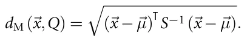
In the univariate case, the Mahalanobis distance is identical to the Z-score. This definition of multivariate Z-score has been widely used and is probably the most common definition for OOD in regression tasks [87–95]. Second, as a robustness test, we consider a random-feature Z-score. For this case, we randomly (in a uniformly distributed manner) choose one feature in each iteration and define the observation as either in or out of distribution based on its Z-score [96]. Third, as an additional robustness test, we also use a weighted distance inspired by the Kullback–Leibler (KL) divergence metric. KL divergence is a concept from information theory used to measure how one probability distribution diverges from a second, reference probability distribution. In the context of OOD, KL divergence is utilized to quantify the difference between the probability distributions of ID and OOD data [97]. Finally, we use an OOD metric based on the y-sparsity, as performed in the novel work of [49].
3.3. ML and DL models
For the experiment, we adopted several popular ML and DL methods, ranging from the simplest one linear regression (LR) to more advanced models (AK):
- • TPOT [36]—an automated ML tool that uses genetic algorithms [98] to optimize ML pipelines, including data preprocessing, feature selection, and model selection. As an AutoML library, TPOT performs hyperparameter optimization intrinsically. The only limitation we used was a time limit of 10 min per individual fold run. Time limited model runs are common in tabular benchmarks to ensure a fair comparison between different models [99–101].
- • AK [37]—an open-source automated ML library built on top of Keras, which automatically searches for the best neural network architecture and hyperparameters for a given dataset. Similar to TPOT, AK performs hyperparameter optimization intrinsically. We limited its runs to at most 200 epochs.
- • XGBoost (XGB) [102]—an optimized gradient boosting algorithm that is highly efficient and widely used for classification and regression tasks, known for its performance and scalability. Hyperparameter optimization was performed using TPOT, with a 10 min time limit per run.
- • Random forest (RF) [103]—an ensemble learning method that constructs a multitude of decision trees [104] during training and outputs the mode of the classes or mean prediction of the individual trees for classification or regression tasks, respectively. Hyperparameter optimization was performed using TPOT, with a 10 min time limit per run.
- • Support vector machine (SVM) [105]—a supervised ML algorithm used for classification and regression tasks, which finds the hyperplane that best separates classes in a high-dimensional space. Hyperparameter optimization was performed using TPOT, with a 10 min time limit per run.
- • K-nearest neighbors (KNNs) [106]—a non-parametric, instance-based learning algorithm used for classification and regression tasks, where the classification of a data point is determined by a majority vote of its KNNs in the feature space. Hyperparameter optimization was performed using TPOT, with a 10 min time limit per run.
- • LR [107]—a statistical method used for modeling the relationship between a dependent variable and one or more independent variables by fitting a linear equation to the observed data.
3.4. Integration of SR in ML and DL models
We use the method proposed by [108] to examine a method to improve OOD performance. Namely, The authors propose using SR as a feature engineering technique to enhance ML and DL regression models. Through extensive experiments on synthetic and real-world datasets, they demonstrate that incorporating SR-derived features significantly improves model performance, with gains in RMSE of up to 11.5% on real-world datasets. The study highlights the potential of SR for improving model accuracy and interpretability while reducing the reliance on domain expertise for feature design. In this work, we extend the investigation of this method by exploring the SR-derived feature contribution to ID and OOD separately, rather than the entire dataset at once. We hypothesize that due to the SR’s tendency not to overfit the data, its contribution to ML or DL OOD performance might be even higher compared to ID performance. To examine this hypothesis, we repeat the experiment described in section 3.2 either with or without an SR-derived feature, for both TPOT and AK. AK is used as a model which estimates various DL architechtures, while TPOT evaluates various ML models, including those mentioned above (XGB, RF, KNN, and SVM). We use two different SR models to establish the robustness of this method. First, GPlearn [35] which is a popular open-source Python library that uses genetic algorithms to fit expression trees over provided data such that the expression tree’s prediction is as close to the predicted parameter while also the expression’s complexity is minimal. Second, QLATTICE [34] which is an open-source Python library that searches for expression trees containing only multiply, linear, sine, tanh, and gaussian (unlike the other two libraries that used addition, multiplication, division, subtraction, and inversion). This library first ‘guesses’ the structure of the expression tree followed by a training procedure which both allocates the right expressions to the tree and the weights of their inputs. It uses a genetic algorithm to search over the expression tree structures.
In the GPlearn model, we utilized the four basic operators: addition, subtraction, multiplication, and division. Additionally, we conducted 200 trials using the default operators in GPlearn, finding no significant variations (results not shown). The modeling was carried out over 50 generations, with the model being tested six times using various parsimony coefficients (0.005, 0.01, 0.02, 0.03, 0.04, 0.05). For each test, the parsimony coefficient that yielded the lowest RMSE on the training data was chosen. Other than these hyperparameters, we maintained all other settings at GPlearn’s default values. In the Feyn model we evaluated various complexity values (5, 10, 15, 20, 25, 30) and chose the highest performing value. Other than that, we used the default hyperparameters of the library.
4. Results
In this section, we present the results of the experiments. First, we outline the performances of various ML and DL models in ID compared to OOD scenarios. Afterwards, we examine the integration of SR-derived features into the performance of ML and DL models in ID and OOD scenarios.
4.1. ML and DL performance in OOD data
Figure 1 presents an example of the results in a single dataset. In this example, Z-scores are determined based on the temperature variable. The target feature, hourly bike rentals, is predicted by the XGB model trained on ID data and tested on both ID and OOD observations. The horizontal axis represents the Z-score and the vertical axis represents RMSE for each observation. As expected, RMSE performance is best for lower Z-scores and deteriorates for higher Z-scores.
Figure 2 and table 1 present a complementary analysis for the entire benchmark of 15 datasets. Figure 2 uses multivariate Z-score as an OOD metric; additional metrics are presented in the appendix. To present datasets of different scales in one figure, we normalize the RMSE scores by dividing them by the corresponding dataset’s mean absolute y (target feature) value. Figure 3 presents the histograms of ID and OOD errors in each model and OOD metric. The results of our experiments reveal several intriguing patterns. Firstly, we observed that the performance of various ML and DL models, including XGB, RF, and TPOT, tends to degrade as the Z-score increases, indicating a decline in model accuracy for OOD data. Table 1 provides both the difference (%) between OOD and ID data, and the slope of a LR in the RMSE versus OOD figures. Both the difference and the slope are always positive, demonstrating the robustness of this result. This finding is consistent with the expected behavior of ML models when encountering data that deviate significantly from the training distribution.
Interestingly, while all models experienced a decrease in performance for OOD samples, the extent of this degradation varied across different models. For instance, RF demonstrated a relatively better resilience to OOD data compared to other models, including XGB. This could be attributed to the inherent robustness of ensemble methods like RF, which combine predictions from multiple decision trees to reduce variance and improve generalization.
Another noteworthy observation is the similarity in the shape of the RMSE versus Z-score curves across different models, albeit with varying magnitudes of RMSE. This suggests that certain OOD samples pose a consistent challenge to all models, regardless of their underlying algorithms. Identifying the characteristics of these particularly challenging OOD samples could provide valuable insights for designing more robust ML models. We also observe that the performance trend with respect to the Z-score is not monotonic, indicating that certain OOD observations are not as challenging to predict as others.
Figure 3 shows the difference between ID and OOD performance as histograms. While some OOD data align with the distribution of ID samples, the OOD errors generally exhibit a much larger tail, indicating that some OOD predictions had significantly larger errors. In some instances, the OOD errors extended beyond merely forming a tail; they were also centered around higher error values. This phenomenon could stem from the integration of multiple datasets, where, in certain datasets, OOD errors deviated markedly from ID errors and were centralized around higher error values.
Lastly, our findings reveal that although the AK model typically exhibited lesser performance compared to other ML models, in line with prior studies, it surpassed even the top-performing ML models in certain high OOD scenarios. This unexpected outcome merits further investigation.
4.2. Integration of SR in ML and DL models to improve OOD performance
In this section, we examine the contribution of integrating an SR-derived feature before the application of ML or DL models [108]. As demonstrated in figure 2, SR does not perform as well as other ML models (such as XGB and RF) in ID observations. However, its performance in OOD observations is only slightly inferior compared to these models, suggesting that features derived from SR could be beneficial for ML models in OOD scenarios.
In table 2 we further evaluate the robustness of this method using two different SR models, and four different measures of OOD. We find that the improvement in performance is robust and holds in all 24 configurations (two different SR models, three different OOD metrics, and two different ML and DL models, either in or out of distribution). Furthermore, in most cases (9 of 12) the relative improvement in OOD is larger than the relative improvement in ID, consistent with our hypothesis that the SR-derived feature contributes more in this type of data.
The integration of SR-derived features into ML and DL models further emphasizes the potential of SR as a tool for enhancing model performance in OOD scenarios. The improvement in both ID and OOD performance suggests that SR-derived features can capture underlying patterns in the data that are not easily detected by conventional ML models. This could be particularly useful in applications where interpretability and generalization to novel scenarios are crucial.
Overall, our results highlight the importance of considering OOD performance in the evaluation of ML models and suggest that incorporating SR-derived features can be an effective strategy to improve model performance, robustness, and interpretability.

| OOD Type | Multivariate-Z | Random feature Z-score | KL-divergence | Sparse-y | ||||
|---|---|---|---|---|---|---|---|---|
| Model | Diff (%) | Slope | Diff (%) | Slope | Diff (%) | Slope | Diff (%) | Slope |
| LR | 145 | 0.025 | 49 | 0.026 | 41 | 0.000 239 | 110 | 0.10 |
| XGB | 69 | 0.013 | 33 | 0.016 | 47 | 0.000 140 | 173 | 0.16 |
| RF | 89 | 0.016 | 27 | 0.017 | 41 | 0.000 148 | 141 | 0.19 |
| SVM | 63 | 0.022 | 8 | 0.015 | 21 | 0.000 233 | 87 | 0.14 |
| KNN | 78 | 0.018 | 42 | 0.021 | 55 | 0.000 143 | 172 | 0.19 |
| TPOT | 77 | 0.014 | 38 | 0.013 | 36 | 0.000 206 | 139 | 0.15 |
| AK | 67 | 0.102 | 42 | 0.054 | 44 | 0.000 586 | 131 | 0.12 |
| Feyn | 85 | 0.020 | 41 | 0.021 | 49 | 0.000 118 | 144 | 0.12 |
5. Discussion
In this study, we explored the performances of various ML and DL models in regression task tests on both ID and OOD samples. To ensure the robustness of our results, we performed extensive modeling with various models (XGB, RF, KNN, SVM, LR, TPOT, AK, gplearn, QLattice), a relatively large benchmark of n = 15 real-world datasets, and multiple repetitions (n = 50 each), resulting in over 40000 model runs. We summarized our results by displaying and comparing the obtained RMSE values for each model as a function of multivariate Z-scores, random feature Z-score, and KL-Divergence.
Based on the obtained results, we found that XGB and RF are not only the best-performing models, but they also maintain a relatively high performance in OOD samples. Also, the DL models performed surprisingly well in OOD data, despite their relatively lower performance in ID data. This observation can be attributed to the DL models’ ability to transform the feature space effectively. Even when the original feature space suggests sparsity or outliers, these models can create a learned feature space where such sparse samples are denser, thus not as sparse in the transformed context. While the various models obtained substantially different RMSE scores in both ID and OOD samples, the shape of the RMSE versus Z-scores figure remained remarkably similar between all models, with different stretch factors in the vertical axis. As such, we conclude that some OOD samples are harder to predict than others, making it difficult for all models to perform well in their prediction. Finally, we note that this shape is not monotonous, meaning that in some cases there are samples that are harder to predict than others, although their OOD-metric is lower. This property raises a question about the current OOD definitions commonly used.
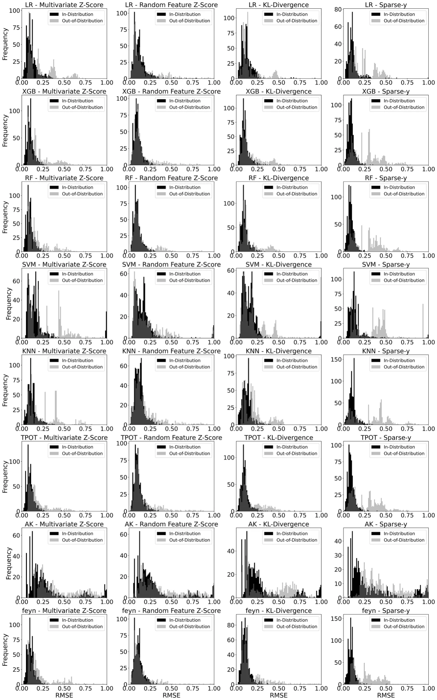
| TPOT | ||||
|---|---|---|---|---|
| Feyn | gplearn | |||
| OOD type | ID (%) | OOD (%) | ID (%) | OOD (%) |
| Multivariate Z-score | 2.56 | 4.74 | 1.92 | 2.80 |
| Random feature Z-score | 3.15 | 4.60 | 2.74 | 5.22 |
| KL-divergence | 3.50 | 1.25 | 3.23 | 3.60 |
| Sparse-y | 3.22 | 3.22 | 5.59 | 1.92 |
| AK | ||||
| Feyn | gplearn | |||
| OOD type | ID (%) | OOD (%) | ID (%) | OOD (%) |
| Multivariate Z-score | 14.32 | 10.34 | 8.89 | 9.82 |
| Random feature Z-score | 12.31 | 13.70 | 9.13 | 9.33 |
| KL-divergence | 12.42 | 4.71 | 9.30 | 13.14 |
| Sparse-y | 11.09 | 16.08 | 7.09 | 17.35 |
To improve the OOD performance of these models while preserving the ID performance, we have introduced a novel approach to predictions in OOD, based on the SR method. Namely, we add additional features to the models by solving an SR task between the input and target variables, before repeating the same task using the ML (DL) model. This outcome undeniably showcases the capacity of features derived from SR to markedly improve the OOD predictive performance of data-driven models. These results indisputably highlight how features obtained through SR have the potential to significantly enhance the predictive capabilities of data-driven models as these provide these models with a generalized yet under-representing representation of the data that these models can use to improve their generalization capabilities. Our analysis indicates that for ID evaluation, the performance of ML and DL models enhanced by a mean of 2.85% and 11.05%, respectively (p < 0.01), with the addition of the SR enchantment. Regarding the OOD data, incorporating the SR-derived feature resulted in a performance improvement of 3.70% and 10.20%, respectively, for ML and DL models (p < 0.01).
Moreover, as illustrated in table 2, the proposed SR method can statistically improve the OOD performance with different definitions of OOD. Furthermore, table 2 supports the fact that this outcome is preserved on a large number of datasets from different domains and diverse properties. As demonstrated from the table, the SR-derived feature improves the ML and DL models while the SR model by itself produces an inferior RMSE score on the same OOD samples. Thus, the combination of the two methods—SR and ML/DL, obtained the highest performance. In addition, the inclusion of SR-derived features can enhance the interpretability of ML models and help prevent overfitting.
While our study underscores the potential of combining SR and ML (DL) models to improve their OOD performance, there are several limitations to this study. First, the suitability of SR may differ based on dataset characteristics, prompting inquiries into its adaptability across diverse domains and the computational properties inherent in the dataset [26, 27]. Second, this study employed two SR methods - (QLattice [34] and GPlearn [35]). Further exploration of other SR models could yield slightly different results [27]. This raises the computational question of finding the best SR model based on dataset characteristics, and optimizing its effectiveness for the OOD task [7]. Finally, the study highlights the importance of estimating confidence intervals in ML models, especially in OOD predictions where larger estimation errors are expected.
Data availability statement
All data that support the findings of this study are included within the article (and any supplementary files).
Funding
This research did not receive any specific grant from funding agencies in the public, commercial, or not-for-profit sectors.
Appendix
Table A.1 presents the descriptive statistics of the datasets used in the study. Figures A.1, A.3, A.5, and A.7 break down the information presented in figure 2 into separate datasets. Figures A.2, A.4, A.6, and A.8 do the same and present the entire range, including outliers. Tables A.2–A.5 summarize the results for the multivariate Z-score, random feature Z-score, KL-Divergence, and y-sparsity, respectively.
| Dataset | # Rows | # Columns | # Categorical columns | Average feature entropy | Kurtosis |
|---|---|---|---|---|---|
| Matbench | 312 | 23 | 0 | 9.2786 | 372.6246 |
| Su 1 | 122 | 8 | 6 | 4.6943 | 3.1692 |
| Su 2 | 136 | 6 | 5 | 4.8412 | −1.3164 |
| Koya 1 (Rup28) | 110 | 11 | 8 | 4.6749 | 1951.502 |
| Koya 1 (Cte) | 110 | 11 | 8 | 6.4352 | 1420.308 |
| Koya 2 (Split28) | 110 | 11 | 7 | 8.9995 | 1160.730 |
| Koya 2 (Poisson28nu) | 110 | 11 | 8 | 8.1476 | 720.4195 |
| Koya 2 (Elast28) | 110 | 11 | 7 | 5.8595 | 1016.892 |
| Koya 2 (Comp28) | 110 | 11 | 7 | 9.7617 | −2046.0 |
| Huang (FS) | 114 | 10 | 9 | 4.4699 | 3.1935 |
| Huang (CS) | 114 | 10 | 9 | 4.4656 | 3.1935 |
| Guo 1 (Ys) | 63 162 | 28 | 3 | 10.4080 | 861.2404 |
| Guo 2 (Ts) | 63 162 | 28 | 3 | 10.4088 | 861.2404 |
| Guo 3 (El) | 63 162 | 28 | 3 | 10.4089 | 861.2404 |
| Bachir | 112 | 4 | 2 | 4.6315 | −0.6539 |
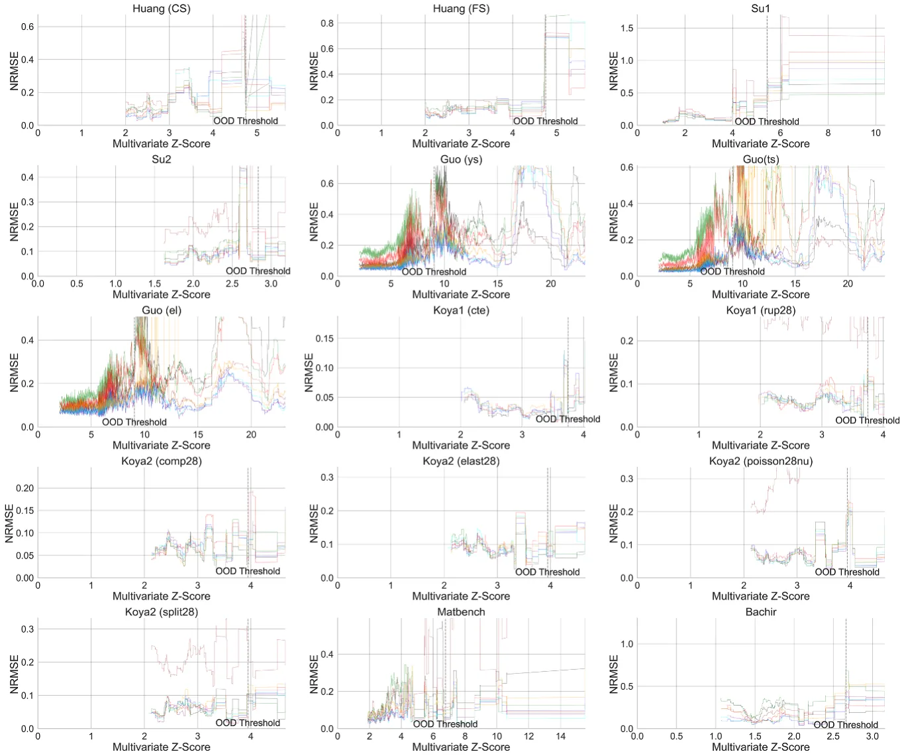
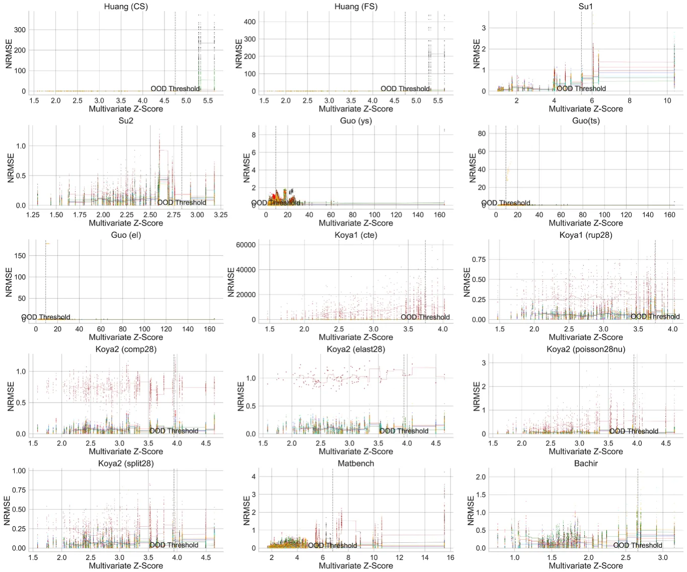
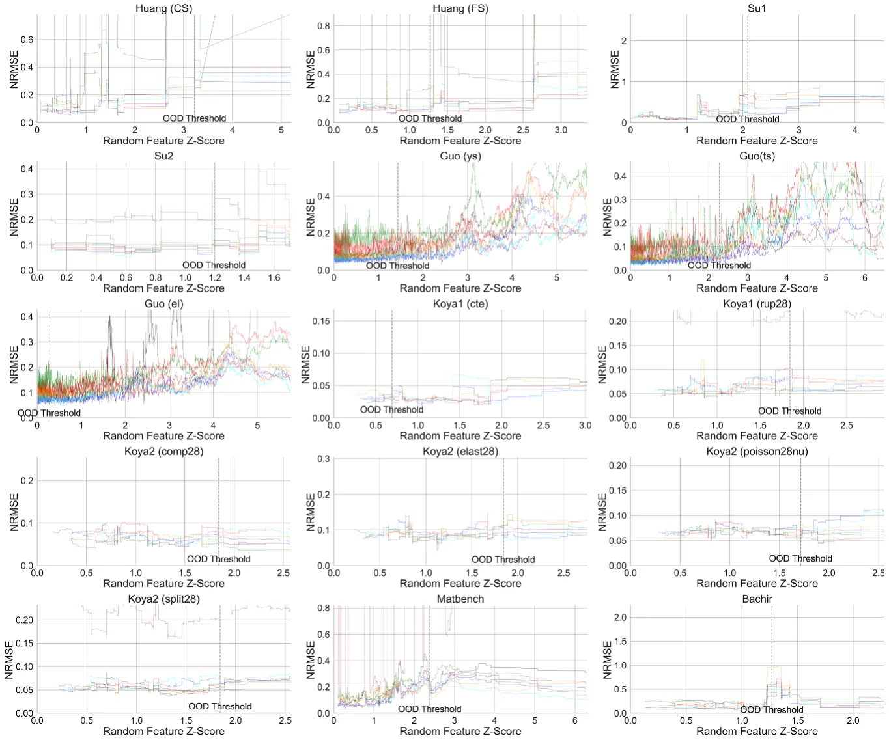
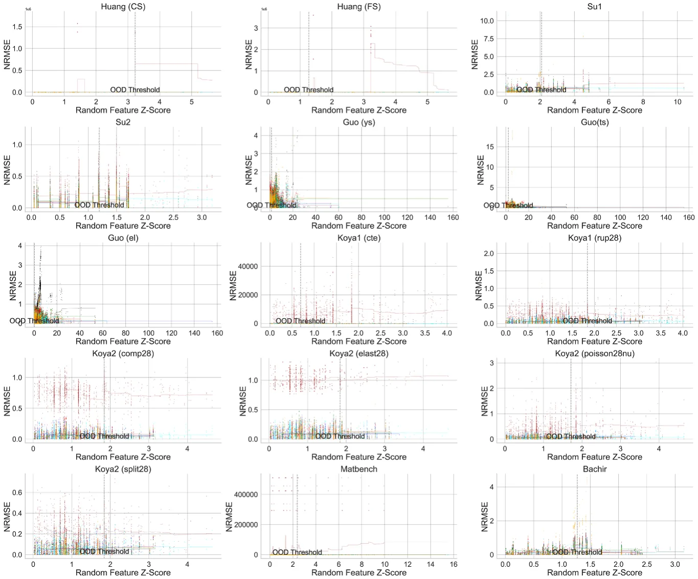
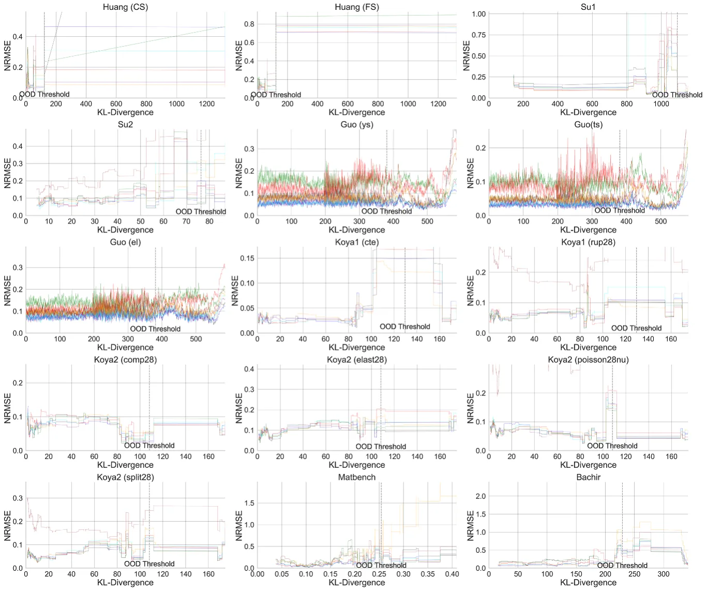
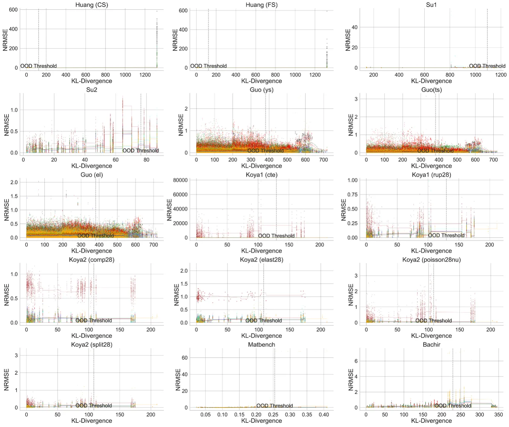
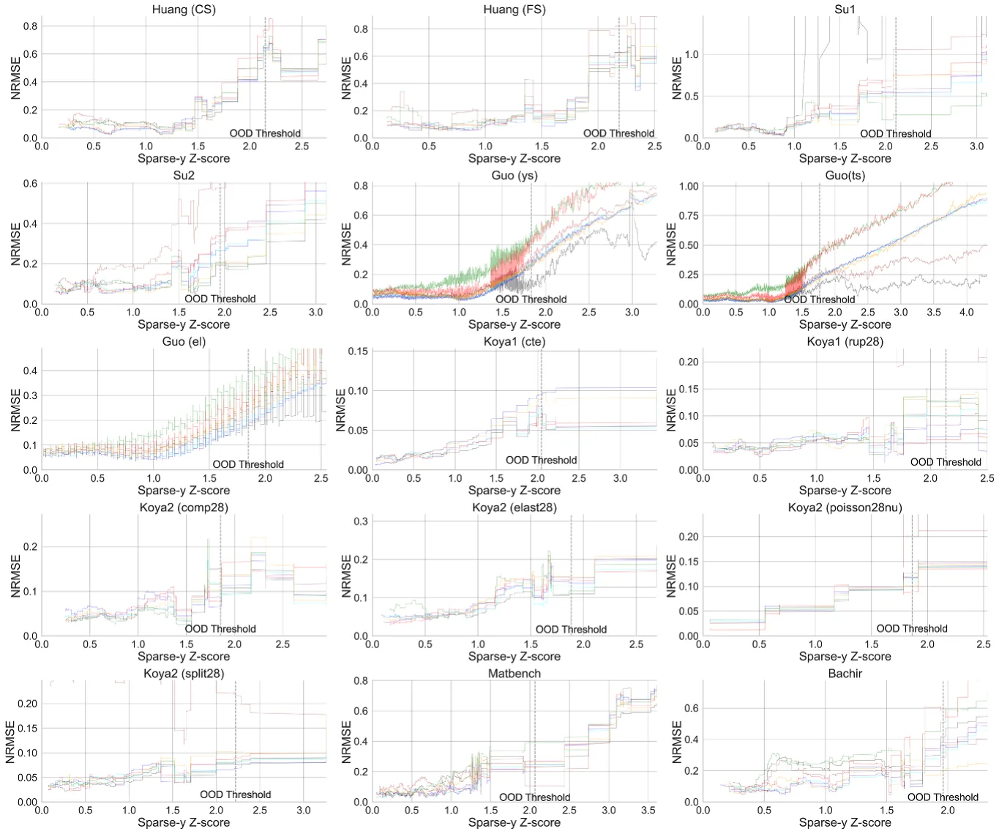
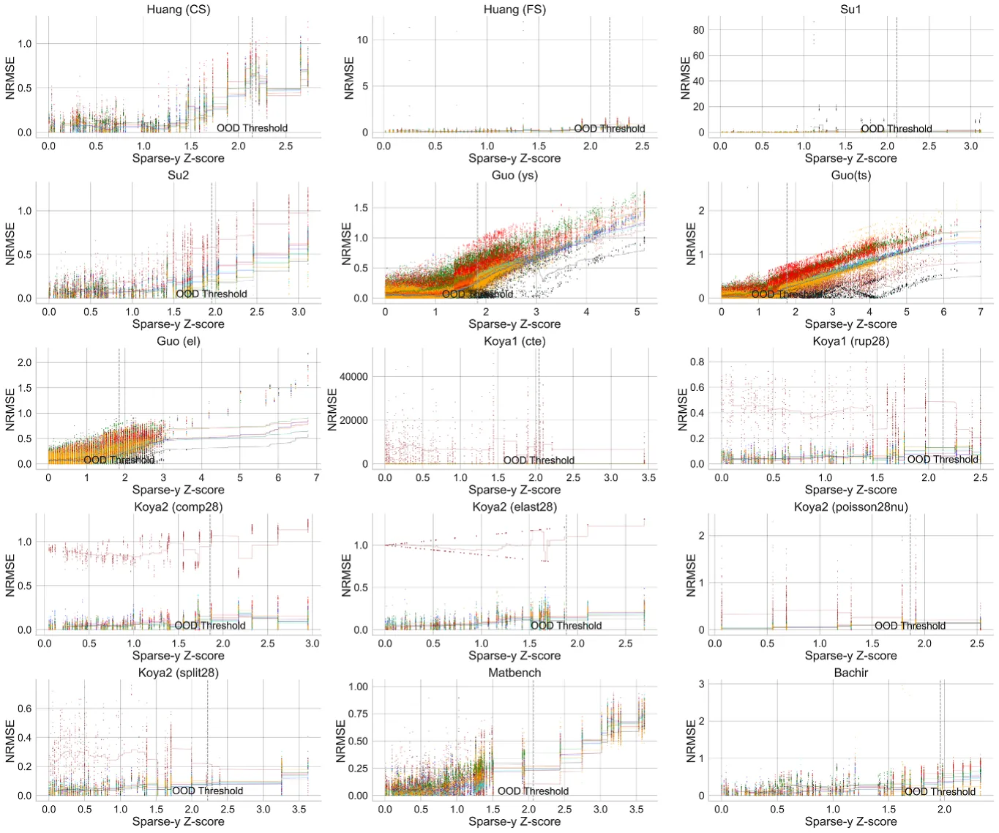
| LR | XGB | |||||||
|---|---|---|---|---|---|---|---|---|
| ID | OOD | Diff (%) | Slope | ID | OOD | Diff (%) | Slope | |
| Combined (mean) | — | — | 9128 | 5.026 | — | — | 91 | 0.038 |
| Combined (median) | — | — | 145 | 0.025 | — | — | 69 | 0.013 |
| Koya1 (rup28) | 57.277 | 64.467 | 12.55 | 0.003 | 56.614 | 64.539 | 14.0 | −0.0 |
| Koya2 (comp28) | 450.86 | 443.442 | −1.65 | 0.01 | 543.184 | 496.164 | −8.66 | 0.009 |
| Koya2 (elast28) | 467 825.449 | 488 019.551 | 4.32 | 0.007 | 481 544.811 | 492 333.521 | 2.24 | 0.004 |
| Koya2 (poisson28nu) | 0.014 | 0.024 | 73.99 | 0.029 | 0.016 | 0.022 | 36.79 | 0.012 |
| Koya2 (split28) | 36.276 | 48.399 | 33.42 | 0.018 | 42.516 | 43.96 | 3.39 | 0.016 |
| Koya1 (cte) | 3.40×10−7 | 8.34×10−7 | 145.35 | 0.02 | 4.24×10−7 | 6.81×10−7 | 60.45 | 0.017 |
| Matbench | 215.466 | 556.608 | 158.33 | 0.06 | 130.749 | 222.899 | 70.48 | 0.013 |
| Bachir | 11.434 | 9.372 | −18.03 | −0.007 | 5.778 | 10.749 | 86.04 | 0.144 |
| Guo (ys) | 35.983 | 138.874 | 285.95 | 0.027 | 28.214 | 76.711 | 171.89 | 0.01 |
| Guo (ts) | 26.717 | 83.622 | 212.99 | 0.015 | 21.242 | 73.1 | 244.12 | 0.009 |
| Guo (el) | 4.643 | 13.16 | 183.42 | 0.025 | 3.846 | 5.553 | 44.38 | 0.003 |
| Su2 | 1.389 | 2.38 | 71.37 | 0.029 | 1.26 | 2.125 | 68.68 | 0.034 |
| Su1 | 1.058 | 5.239 | 395.0 | 0.139 | 1.257 | 4.341 | 245.42 | 0.091 |
| Huang (FS) | 1.473 | 992.833 | 67 284.23 | 34.8 | 1.414 | 4.478 | 216.71 | 0.137 |
| Huang (CS) | 12.01 | 8189.563 | 68 087.25 | 40.215 | 10.99 | 23.029 | 109.55 | 0.068 |
| RF | SVM | |||||||
| ID | OOD | Diff (%) | Slope | ID | OOD | Diff (%) | Slope | |
| Combined (mean) | — | — | 92 | 0.04 | — | — | 1192 | 0.738 |
| Combined (median) | — | — | 89 | 0.016 | — | — | 63 | 0.022 |
| Koya1 (rup28) | 56.751 | 62.34 | 9.85 | 0.0 | 53.822 | 62.733 | 16.56 | 0.001 |
| Koya2 (comp28) | 478.083 | 532.844 | 11.45 | 0.02 | 485.09 | 568.993 | 17.3 | 0.023 |
| Koya2 (elast28) | 459 492 | 485 228 | 5.6 | 0.004 | 522 922 | 517 440 | −1.05 | 0.004 |
| Koya2 (poisson28nu) | 0.015 | 0.021 | 42.25 | 0.012 | 0.014 | 0.025 | 76.84 | 0.036 |
| Koya2 (split28) | 37.354 | 41.623 | 11.43 | 0.019 | 37.053 | 41.262 | 11.36 | 0.013 |
| Koya1 (cte) | 3.69×10−7 | 7.37×10−7 | 99.46 | 0.016 | 9×10−7 | 10×10−7 | 1.85 | 0.01 |
| Matbench | 111.912 | 220.716 | 97.22 | 0.011 | 262.813 | 279.134 | 6.21 | 0.0 |
| Bachir | 6.244 | 12.082 | 93.49 | 0.176 | 12.413 | 18.595 | 49.81 | 0.164 |
| Guo (ys) | 27.989 | 69.454 | 148.15 | 0.008 | 72.059 | 158.075 | 119.37 | 0.018 |
| Guo (ts) | 21.101 | 66.757 | 216.36 | 0.007 | 64.672 | 206.387 | 219.13 | 0.022 |
| Guo (el) | 3.827 | 5.26 | 37.46 | 0.003 | 6.085 | 11.067 | 81.88 | 0.012 |
| Su2 | 1.333 | 2.304 | 72.83 | 0.042 | 1.696 | 2.759 | 62.68 | 0.044 |
| Su1 | 1.289 | 4.433 | 243.97 | 0.094 | 1.067 | 4.832 | 352.98 | 0.123 |
| Huang (FS) | 1.392 | 4.253 | 205.49 | 0.128 | 1.849 | 24.22 | 1209.55 | 1.13 |
| Huang (CS) | 10.16 | 19.176 | 88.74 | 0.053 | 12.138 | 1913 | 15 666 | 9.469 |
| (Continued.) |
| KNN | TPOT | |||||||
|---|---|---|---|---|---|---|---|---|
| ID | OOD | Diff (%) | Slope | ID | OOD | Diff (%) | Slope | |
| Combined (mean) | — | — | 103 | 0.04 | — | — | 105 | 0.043 |
| Combined (median) | — | — | 78 | 0.018 | — | — | 77 | 0.014 |
| Koya1 (rup28) | 64.876 | 72.727 | 12.1 | 0.009 | 59.293 | 72.132 | 21.65 | 0.003 |
| Koya2 (comp28) | 550.218 | 656.378 | 19.29 | 0.019 | 512.173 | 520.591 | 1.64 | 0.014 |
| Koya2 (elast28) | 499 154 | 533 057 | 6.79 | 0.005 | 504 126 | 480 196 | −4.75 | −0.002 |
| Koya2 (poisson28nu) | 0.016 | 0.022 | 43.5 | 0.014 | 0.015 | 0.023 | 58.03 | 0.022 |
| Koya2 (split28) | 38.912 | 40.167 | 3.23 | 0.013 | 39.723 | 43.772 | 10.19 | 0.018 |
| Koya1 (cte) | 3.79×10−7 | 7.06×10−7 | 86.18 | 0.014 | 4.01×10−7 | 7.78×10−7 | 93.9 | 0.014 |
| Matbench | 131.858 | 234.482 | 77.83 | 0.01 | 108.089 | 199.442 | 84.52 | 0.01 |
| Bachir | 9.486 | 10.033 | 5.76 | 0.066 | 6.082 | 11.19 | 83.97 | 0.155 |
| Guo (ys) | 53.175 | 144.964 | 172.62 | 0.018 | 28.55 | 74.545 | 161.1 | 0.009 |
| Guo (ts) | 46.839 | 185.478 | 295.99 | 0.025 | 21.216 | 72.282 | 240.69 | 0.008 |
| Guo (el) | 5.085 | 10.26 | 101.78 | 0.012 | 3.877 | 5.475 | 41.24 | 0.004 |
| Su2 | 1.379 | 2.322 | 68.39 | 0.051 | 1.317 | 2.083 | 58.11 | 0.039 |
| Su1 | 1.393 | 5.916 | 324.84 | 0.146 | 1.126 | 4.869 | 332.25 | 0.116 |
| Huang (FS) | 1.523 | 4.181 | 174.5 | 0.108 | 1.347 | 5.577 | 314.08 | 0.164 |
| Huang (CS) | 11.53 | 29.706 | 157.66 | 0.088 | 12.596 | 22.356 | 77.48 | 0.064 |
| AutoKeras | Feyn | |||||||
| ID | OOD | Diff (%) | Slope | ID | OOD | Diff (%) | Slope | |
| Combined (mean) | — | — | 432 | 252.958 | — | — | 154 | 0.048 |
| Combined (median) | — | — | 67 | 0.102 | — | — | 85 | 0.020 |
| Koya1 (rup28) | 243.99 | 246.801 | 1.15 | 0.003 | 59.348 | 71.724 | 20.85 | 0.005 |
| Koya2 (comp28) | 4112.393 | 4097.182 | −0.37 | 0.002 | 482.535 | 496.08 | 2.81 | 0.015 |
| Koya2 (elast28) | 4332 499.971 | 4605 584.788 | 6.3 | 0.043 | 504 360.666 | 577 864.854 | 14.57 | 0.014 |
| Koya2 (poisson28nu) | 0.077 | 0.135 | 75.06 | 0.185 | 0.016 | 0.022 | 39.31 | 0.019 |
| Koya2 (split28) | 118.265 | 132.763 | 12.26 | 0.004 | 43.415 | 51.546 | 18.73 | 0.02 |
| Koya1 (cte) | 0.081 | 0.123 | 51.66 | 3789.931 | 0.0 | 0.0 | 78.37 | 0.016 |
| Matbench | 248.652 | 902.724 | 263.05 | 0.102 | 192.619 | 355.731 | 84.68 | 0.017 |
| Bachir | 8.915 | 13.911 | 56.04 | 0.166 | 6.673 | 15.051 | 125.56 | 0.245 |
| Guo (ys) | 35.828 | 88.869 | 148.05 | 0.011 | 34.374 | 84.267 | 145.15 | 0.01 |
| Guo (ts) | 26.972 | 68.479 | 153.89 | 0.006 | 26.293 | 91.404 | 247.63 | 0.022 |
| Guo (el) | 4.627 | 7.711 | 66.63 | 0.005 | 4.652 | 13.891 | 198.62 | 0.028 |
| Su2 | 3.085 | 4.965 | 60.93 | 0.11 | 1.098 | 1.909 | 73.85 | 0.038 |
| Su1 | 1.176 | 7.181 | 510.41 | 0.138 | 1.125 | 8.045 | 614.93 | 0.099 |
| Huang (FS) | 1.746 | 56.666 | 3145.48 | 2.07 | 1.456 | 4.251 | 192.01 | 0.14 |
| Huang (CS) | 15.713 | 317.889 | 1923.06 | 1.596 | 13.177 | 73.301 | 456.29 | 0.031 |
| LR | XGB | |||||||
|---|---|---|---|---|---|---|---|---|
| ID | OOD | Diff (%) | Slope | ID | OOD | Diff (%) | Slope | |
| Combined (mean) | — | — | 207 | 2.031 | — | — | 47 | 0.030 |
| Combined (median) | — | — | 49 | 0.026 | — | — | 33 | 0.016 |
| Koya1 (rup28) | 50.634 | 54.921 | 8.47 | 0.009 | 56.712 | 75.569 | 33.25 | 0.001 |
| Koya2 (comp28) | 423.815 | 363.421 | −14.25 | −0.003 | 522.017 | 441.558 | −15.41 | −0.012 |
| Koya2 (elast28) | 456 254.615 | 409 750.38 | −10.19 | 0.007 | 514 543.056 | 520 162.538 | 1.09 | −0.003 |
| Koya2 (poisson28nu) | 0.017 | 0.015 | −11.39 | 0.005 | 0.017 | 0.018 | 7.75 | 0.009 |
| Koya2 (split28) | 33.846 | 30.834 | −8.9 | −0.001 | 39.676 | 37.84 | −4.63 | 0.004 |
| Koya1 (cte) | 0.0 | 0.0 | 49.1 | 0.013 | 0.0 | 0.0 | 10.74 | 0.0 |
| Matbench | 249.828 | 633.7 | 153.65 | 0.059 | 145.133 | 267.138 | 84.07 | 0.028 |
| Bachir | 10.395 | 13.551 | 30.36 | 0.032 | 5.762 | 12.963 | 124.98 | 0.048 |
| Guo (ys) | 41.094 | 73.743 | 79.45 | 0.049 | 29.172 | 48.288 | 65.53 | 0.018 |
| Guo (ts) | 30.129 | 46.035 | 52.79 | 0.026 | 22.259 | 37.659 | 69.19 | 0.016 |
| Guo (el) | 4.723 | 9.213 | 95.09 | 0.073 | 3.797 | 4.833 | 27.27 | 0.008 |
| Su2 | 1.566 | 1.609 | 2.75 | 0.015 | 1.303 | 1.603 | 22.97 | 0.035 |
| Su1 | 2.08 | 3.146 | 51.22 | 0.169 | 1.639 | 3.624 | 121.18 | 0.149 |
| Huang (FS) | 10.387 | 114.221 | 999.63 | 6.249 | 1.569 | 3.13 | 99.53 | 0.103 |
| Huang (CS) | 203.246 | 3511.058 | 1627.49 | 23.769 | 10.346 | 16.704 | 61.46 | 0.052 |
| RF | SVM | |||||||
| ID | OOD | Diff (%) | Slope | ID | OOD | Diff (%) | Slope | |
| Combined (mean) | — | — | 44 | 0.036 | — | — | 269 | 0.656 |
| Combined (median) | — | — | 27 | 0.017 | — | — | 8 | 0.015 |
| Koya1 (rup28) | 53.312 | 70.085 | 31.46 | 0.017 | 49.542 | 53.367 | 7.72 | 0.008 |
| Koya2 (comp28) | 459.346 | 476.054 | 3.64 | 0.003 | 432.901 | 378.661 | −12.53 | −0.001 |
| Koya2 (elast28) | 483 078.17 | 429 914.285 | −11.01 | 0.003 | 530 562.261 | 492 178.993 | −7.23 | 0.008 |
| Koya2 (poisson28nu) | 0.015 | 0.016 | 1.57 | −0.001 | 0.016 | 0.015 | −9.14 | −0.005 |
| Koya2 (split28) | 34.131 | 31.002 | −9.17 | 0.004 | 34.647 | 31.477 | −9.15 | 0.005 |
| Koya1 (cte) | 0.0 | 0.0 | 5.58 | 0.007 | 0.0 | 0.0 | −0.74 | −0.005 |
| Matbench | 133.318 | 247.571 | 85.7 | 0.027 | 243.135 | 319.645 | 31.47 | 0.021 |
| Bachir | 5.609 | 12.969 | 131.23 | 0.09 | 10.206 | 16.831 | 64.91 | 0.089 |
| Guo (ys) | 28.902 | 44.117 | 52.65 | 0.017 | 71.197 | 94.7 | 33.01 | 0.024 |
| Guo (ts) | 21.854 | 45.62 | 108.75 | 0.025 | 60.449 | 84.278 | 39.42 | 0.027 |
| Guo (el) | 3.788 | 4.731 | 24.89 | 0.009 | 6.558 | 7.732 | 17.9 | 0.015 |
| Su2 | 1.39 | 1.612 | 15.98 | 0.026 | 1.813 | 1.858 | 2.52 | 0.006 |
| Su1 | 1.502 | 2.976 | 98.2 | 0.149 | 2.073 | 2.129 | 2.73 | 0.07 |
| Huang (FS) | 1.503 | 3.006 | 100.0 | 0.097 | 2.538 | 15.202 | 498.94 | 0.616 |
| Huang (CS) | 11.115 | 14.112 | 26.96 | 0.062 | 18.307 | 635.321 | 3370.3 | 8.967 |
(Continued.)
| KNN | TPOT | |||||||
|---|---|---|---|---|---|---|---|---|
| ID | OOD | Diff (%) | Slope | ID | OOD | Diff (%) | Slope | |
| Combined (mean) | — | — | 43 | 0.032 | — | — | 58 | 0.027 |
| Combined (median) | — | — | 42 | 0.021 | — | — | 38 | 0.013 |
| Koya1 (rup28) | 55.963 | 79.377 | 41.84 | 0.018 | 56.486 | 73.24 | 29.66 | 0.003 |
| Koya2 (comp28) | 565.678 | 617.133 | 9.1 | 0.002 | 505.586 | 476.506 | −5.75 | 0.003 |
| Koya2 (elast28) | 496 947.967 | 509 092.608 | 2.44 | 0.014 | 511 894.47 | 473 018.137 | −7.59 | −0.008 |
| Koya2 (poisson28nu) | 0.016 | 0.016 | −0.41 | −0.005 | 0.016 | 0.019 | 15.67 | 0.007 |
| Koya2 (split28) | 37.863 | 36.041 | −4.81 | 0.006 | 43.241 | 40.577 | −6.16 | 0.004 |
| Koya1 (cte) | 0.0 | 0.0 | 0.34 | 0.007 | 0.0 | 0.0 | 38.48 | 0.006 |
| Matbench | 136.126 | 293.502 | 115.61 | 0.042 | 117.784 | 244.567 | 107.64 | 0.022 |
| Bachir | 8.719 | 13.607 | 56.06 | 0.018 | 6.042 | 12.457 | 106.17 | 0.058 |
| Guo (ys) | 58.639 | 91.695 | 56.37 | 0.028 | 29.465 | 53.592 | 81.88 | 0.013 |
| Guo (ts) | 59.106 | 100.704 | 70.38 | 0.037 | 22.265 | 59.898 | 169.02 | 0.017 |
| Guo (el) | 5.301 | 7.308 | 37.85 | 0.021 | 3.855 | 4.878 | 26.51 | 0.009 |
| Su2 | 1.467 | 1.81 | 23.41 | 0.034 | 1.365 | 1.693 | 24.08 | 0.029 |
| Su1 | 1.795 | 3.599 | 100.46 | 0.12 | 1.538 | 3.954 | 157.14 | 0.123 |
| Huang (FS) | 1.598 | 2.692 | 68.53 | 0.072 | 1.638 | 3.05 | 86.13 | 0.067 |
| Huang (CS) | 10.243 | 16.513 | 61.21 | 0.065 | 11.274 | 16.559 | 46.88 | 0.055 |
| AutoKeras | Feyn | |||||||
| ID | OOD | Diff (%) | Slope | ID | OOD | Diff (%) | Slope | |
| Combined (mean) | — | — | 1 × 107 | 1 × 104 | — | — | 61 | 0.038 |
| Combined (median) | — | — | 42 | 0.054 | — | — | 41 | 0.021 |
| Koya1 (rup28) | 225.177 | 233.622 | 3.75 | −0.004 | 55.542 | 78.11 | 40.63 | 0.009 |
| Koya2 (comp28) | 4228.536 | 4123.032 | -2.5 | −0.004 | 2459.972 | 438.038 | −82.19 | 0.001 |
| Koya2 (elast28) | 4340 893.795 | 4422 056.929 | 1.87 | 0.013 | 508 630.122 | 494 836.315 | −2.71 | 0.008 |
| Koya2 (poisson28nu) | 0.081 | 0.113 | 39.48 | 0.095 | 0.017 | 0.02 | 16.38 | 0.005 |
| Koya2 (split28) | 115.087 | 129.218 | 12.28 | 0.004 | 46.402 | 44.637 | −3.8 | −0.0 |
| Koya1 (cte) | 0.075 | 0.106 | 41.66 | 2353.094 | 0.0 | 0.0 | 29.05 | 0.01 |
| Matbench | 249.459 | 48 875 981.019 | 1 × 108 | 8146.092 | 192.066 | 399.734 | 108.12 | 0.03 |
| Bachir | 8.226 | 15.086 | 83.41 | 0.06 | 5.881 | 15.878 | 170.0 | 0.093 |
| Guo (ys) | 37.378 | 71.7 | 91.82 | 0.014 | 37.34 | 60.02 | 60.74 | 0.021 |
| Guo (ts) | 28.574 | 55.414 | 93.93 | 0.009 | 29.046 | 61.953 | 113.29 | 0.032 |
| Guo (el) | 4.636 | 6.241 | 34.61 | 0.009 | 4.71 | 5.544 | 17.7 | 0.008 |
| Su2 | 3.239 | 4.172 | 28.79 | 0.054 | 1.302 | 1.586 | 21.84 | 0.047 |
| Su1 | 1.809 | 5.299 | 192.94 | 0.238 | 1.859 | 4.741 | 154.99 | 0.19 |
| Huang (FS) | 2.616 | 1 × 107 | 1 × 109 | 210 373.187 | 1.716 | 3.113 | 81.43 | 0.094 |
| Huang (CS) | 24.635 | 1 × 107 | 1 × 108 | 72 544.162 | 12.68 | 37.312 | 194.25 | 0.029 |
| LR | XGB | |||||||
|---|---|---|---|---|---|---|---|---|
| ID | OOD | Diff (%) | Slope | ID | OOD | Diff (%) | Slope | |
| Combined (mean) | — | — | 8824 | 0.063 922 | — | — | 65 | 0.056 752 |
| Combined (median) | — | — | 41 | 0.000 239 | — | — | 47 | 0.000 140 |
| Koya1 (rup28) | 53.596 | 81.894 | 52.8 | 0.000 239 | 55.416 | 89.791 | 62.03 | 0.000 336 |
| Koya2 (comp28) | 494.541 | 286.23 | −42.12 | −0.000135 | 533.225 | 368.64 | −30.87 | −8.6 × 10−5 |
| Koya2 (elast28) | 479 476.808 | 549 122.097 | 14.53 | 0.000 275 | 483 565.253 | 591 643.136 | 22.35 | 0.000 227 |
| Koya2 | 0.016 | 0.016 | 0.01 | −0.000133 | 0.017 | 0.019 | 12.69 | −1.7 × 10−5 |
| (poisson28nu) | ||||||||
| Koya2 (split28) | 35.655 | 47.916 | 34.39 | 0.000 255 | 37.499 | 54.929 | 46.48 | 0.000 345 |
| Koya1 (cte) | 0.0 | 0.0 | 187.01 | 0.000 224 | 0.0 | 0.0 | 75.67 | 0.00 014 |
| Matbench | 215.207 | 389.303 | 80.9 | 0.587 942 | 141.428 | 332.284 | 134.95 | 0.847 855 |
| Bachir | 9.042 | 18.646 | 106.22 | 0.000 858 | 4.739 | 18.067 | 281.28 | 0.001 162 |
| Guo (ys) | 42.131 | 50.347 | 19.5 | −3 × 10−6 | 30.047 | 29.851 | −0.65 | −6 × 10−6 |
| Guo (ts) | 30.468 | 38.688 | 26.98 | 9 ×10−6 | 22.866 | 22.479 | −1.69 | 2 ×10−6 |
| Guo (el) | 4.677 | 5.18 | 10.75 | 1.2×10−5 | 3.811 | 4.202 | 10.26 | 1.9×10−5 |
| Su2 | 1.498 | 2.105 | 40.59 | 0.000 366 | 1.182 | 2.251 | 90.46 | 0.001 079 |
| Su1 | 2.209 | 3.196 | 44.67 | −1.9 × 10−5 | 1.848 | 2.465 | 33.36 | −4.6 × 10−5 |
| Huang (FS) | 1.706 | 565.049 | 33 029.39 | 0.089 637 | 1.543 | 4.417 | 186.18 | 0.00 024 |
| Huang (CS) | 12.959 | 12 810.712 | 98 756.58 | 0.279 307 | 11.546 | 16.935 | 46.67 | 2.4×10−5 |
| RF | SVM | |||||||
| ID | OOD | Diff (%) | Slope | ID | OOD | Diff (%) | Slope | |
| Combined | — | — | 66 | 0.047 045 | — | — | 1458 | 0.038 432 |
| (mean) | ||||||||
| Combined (median) | — | — | 41 | 0.000 148 | — | — | 21 | 0.000 233 |
| Koya1 (rup28) | 54.336 | 95.451 | 75.67 | 0.00 039 | 57.122 | 83.217 | 45.68 | 0.000 233 |
| Koya2 (comp28) | 511.465 | 334.74 | −34.55 | −9.1 × 10−5 | 501.633 | 313.232 | −37.56 | −0.000121 |
| Koya2 (elast28) | 471 463.068 | 607 963.504 | 28.95 | 0.000 297 | 483 256.245 | 584 269.66 | 20.9 | 0.000 318 |
| Koya2 (poisson28nu) | 0.016 | 0.018 | 16.35 | −2.8 × 10−5 | 0.016 | 0.016 | −1.52 | −0.000138 |
| Koya2 (split28) | 37.643 | 52.99 | 40.77 | 0.000 322 | 38.198 | 47.929 | 25.47 | 0.000 246 |
| Koya1 (cte) | 0.0 | 0.0 | 115.9 | 0.000 148 | 0.0 | 0.0 | −1.24 | −0.000176 |
| Matbench | 129.779 | 299.027 | 130.41 | 0.701 805 | 236.187 | 470.425 | 99.17 | 0.510 919 |
| Bachir | 4.46 | 15.834 | 255.04 | 0.001 116 | 9.149 | 18.444 | 101.6 | 0.000 905 |
| Guo (ys) | 29.861 | 30.078 | 0.73 | 2 ×10−6 | 73.021 | 70.613 | −3.3 | −5.7 × 10−5 |
| Guo (ts) | 22.679 | 22.212 | −2.06 | 2 ×10−6 | 58.209 | 57.093 | −1.92 | −2.6 × 10−5 |
| Guo (el) | 3.811 | 4.2 | 10.22 | 2.4×10−5 | 6.493 | 7.019 | 8.09 | 5.4×10−5 |
| Su2 | 1.355 | 2.693 | 98.71 | 0.001 467 | 1.65 | 2.486 | 50.73 | 0.000 761 |
| Su1 | 1.669 | 2.769 | 65.96 | −1.2 × 10−5 | 1.77 | 1.812 | 2.41 | −4.7 × 10−5 |
| Huang (FS) | 1.409 | 4.432 | 214.64 | 0.000 206 | 1.894 | 36.556 | 1829.87 | 0.00 525 |
| Huang (CS) | 11.273 | 8.811 | −21.85 | 2.9×10−5 | 13.218 | 2621.196 | 19 730.95 | 0.058 356 |
(Continued.)
| KNN | TPOT | |||||||
|---|---|---|---|---|---|---|---|---|
| ID | OOD | Diff (%) | Slope | ID | OOD | Diff (%) | Slope | |
| Combined | — | — | 68 | 0.061 217 | — | — | 160 | 0.059 058 |
| (mean) | ||||||||
| Combined (median) | mean | mean | 55 | 0.000 143 | mean | mean | 36 | 0.000 206 |
| Koya1 (rup28) | 62.688 | 82.764 | 32.03 | 0.000 187 | 56.879 | 102.465 | 80.14 | 0.0004 |
| Koya2 (comp28) | 578.198 | 382.879 | -33.78 | -0.000 165 | 526.534 | 373.79 | −29.01 | −6.4 × 10−5 |
| Koya2 (elast28) | 480 946.395 | 747 342.212 | 55.39 | 0.000 489 | 504 471.706 | 626 451.264 | 24.18 | 0.000 408 |
| Koya2 (poisson28nu) | 0.015 | 0.02 | 33.05 | −4 × 10−5 | 0.017 | 0.018 | 9.02 | −6 × 10−5 |
| Koya2 (split28) | 39.268 | 55.237 | 40.67 | 0.000 336 | 40.107 | 54.682 | 36.34 | 0.000 356 |
| Koya1 (cte) | 0.0 | 0.0 | 100.29 | 0.000 152 | 0.0 | 0.0 | 142.82 | 0.000 206 |
| Matbench | 147.468 | 376.143 | 155.07 | 0.914 724 | 135.697 | 338.709 | 149.61 | 0.876 538 |
| Bachir | 7.436 | 18.88 | 153.91 | 0.000 785 | 4.875 | 17.912 | 267.39 | 0.001 234 |
| Guo (ys) | 62.464 | 79.698 | 27.59 | 9.1×10−5 | 30.248 | 30.71 | 1.53 | 4 ×10−6 |
| Guo (ts) | 63.614 | 80.391 | 26.37 | 7.2×10−5 | 23.182 | 23.575 | 1.7 | 5 ×10−6 |
| Guo (el) | 5.417 | 7.155 | 32.07 | 0.000 143 | 3.854 | 4.301 | 11.6 | 2.7×10−5 |
| Su2 | 1.451 | 2.652 | 82.73 | 0.001 281 | 1.07 | 3.332 | 211.41 | 0.003 348 |
| Su1 | 1.97 | 3.657 | 85.61 | 2.6×10−5 | 6.597 | 2.351 | −64.36 | −0.000114 |
| Huang (FS) | 1.549 | 4.095 | 164.42 | 0.000 141 | 1.556 | 4.254 | 173.46 | 0.000 119 |
| Huang (CS) | 9.536 | 15.027 | 57.58 | 3.4×10−5 | 11.383 | 169.765 | 1391.38 | 0.003 462 |
| AutoKeras | Feyn | |||||||
| ID | OOD | Diff (%) | Slope | ID | OOD | Diff (%) | Slope | |
| Combined | — | — | 373 | 1.912 439 | — | — | 115 | 0.261 695 |
| (mean) | ||||||||
| Combined (median) | mean | mean | 44 | 0.000 586 | mean | mean | 49 | 0.000 118 |
| Koya1 (rup28) | 219.613 | 196.231 | −10.65 | −0.000302 | 57.592 | 92.55 | 60.7 | 0.000 359 |
| Koya2 (comp28) | 4159.87 | 3904.728 | −6.13 | −0.000453 | 494.887 | 422.105 | −14.71 | 3.2×10−5 |
| Koya2 (elast28) | 4287 209.181 | 4671 163.151 | 8.96 | 0.000 586 | 523 663.112 | 674 246.604 | 28.76 | 0.000 413 |
| Koya2 | 0.079 | 0.152 | 92.7 | 0.002 489 | 0.017 | 0.019 | 12.27 | −1 × 10−6 |
| (poisson28nu) | ||||||||
| Koya2 (split28) | 115.916 | 105.641 | −8.86 | −0.000289 | 44.121 | 60.234 | 36.52 | 0.000 455 |
| Koya1 (cte) | 0.08 | 0.115 | 43.72 | 27.3981 | 0.0 | 0.0 | 119.92 | 0.000 118 |
| Matbench | 259.583 | 576.712 | 122.17 | 1.26 358 | 210.78 | 815.999 | 287.13 | 3.918 635 |
| Bachir | 6.776 | 22.286 | 228.93 | 0.001 396 | 4.613 | 34.818 | 654.73 | 0.0023 |
| Guo (ys) | 39.117 | 43.157 | 10.33 | 1.7×10−5 | 39.27 | 42.854 | 9.13 | −1 × 10−6 |
| Guo (ts) | 29.978 | 32.117 | 7.14 | 4 ×10−6 | 31.028 | 31.349 | 1.03 | 1 ×10−6 |
| Guo (el) | 4.613 | 5.235 | 13.48 | 3.4×10−5 | 4.675 | 5.128 | 9.7 | 2.9×10−5 |
| Su2 | 2.744 | 7.545 | 174.94 | 0.006 853 | 1.04 | 3.387 | 225.62 | 0.002 808 |
| Su1 | 1.72 | 5.064 | 194.44 | 0.000 116 | 1.824 | 2.712 | 48.72 | 7 ×10−6 |
| Huang (FS) | 1.724 | 54.546 | 3064.2 | 0.008 213 | 1.608 | 4.477 | 178.39 | 0.000 286 |
| Huang (CS) | 16.803 | 295.712 | 1659.86 | 0.006 248 | 13.518 | 22.493 | 66.39 | −1.1 × 10−5 |
| LR | XGB | |||||||
|---|---|---|---|---|---|---|---|---|
| ID | OOD | Diff (%) | Slope | ID | OOD | Diff (%) | Slope | |
| Combined (mean) | — | — | 116.16 | 0.13 | — | — | 211.83 | 0.14 |
| Combined (median) | — | — | 110.29 | 0.10 | — | — | 173.28 | 0.16 |
| Koya1 (rup28) | 51.923 | 69.496 | 33.84 | 0.022 | 56.54 | 53.491 | −5.39 | 0.004 |
| Koya2 (comp28) | 416.543 | 674.131 | 61.84 | 0.04 | 500.504 | 595.649 | 19.01 | 0.025 |
| Koya2 (elast28) | 458 105.225 | 716 480.222 | 56.4 | 0.075 | 500 054.953 | 725 899.17 | 45.16 | 0.07 |
| Koya2 (poisson28nu) | 0.017 | 0.024 | 46.95 | 0.051 | 0.017 | 0.025 | 45.58 | 0.06 |
| Koya2 (split28) | 30.844 | 44.811 | 45.28 | 0.038 | 34.484 | 35.79 | 3.79 | 0.024 |
| Koya1 (cte) | 0.0 | 0.0 | 110.29 | 0.03 | 0.0 | 0.0 | 173.29 | 0.046 |
| Matbench | 166.598 | 521.366 | 212.95 | 0.179 | 118.406 | 541.399 | 357.24 | 0.212 |
| Bachir | 9.877 | 15.508 | 57.01 | 0.147 | 6.229 | 12.812 | 105.68 | 0.161 |
| Guo (ys) | 33.255 | 91.541 | 175.27 | 0.126 | 24.131 | 108.242 | 348.57 | 0.199 |
| Guo (ts) | 24.319 | 67.716 | 178.45 | 0.057 | 18.897 | 140.13 | 641.56 | 0.205 |
| Guo (el) | 4.002 | 8.431 | 110.67 | 0.102 | 3.368 | 7.983 | 137.01 | 0.113 |
| Su2 | 1.303 | 3.037 | 133.11 | 0.107 | 1.14 | 3.616 | 217.36 | 0.157 |
| Su1 | 28.724 | 23.908 | −16.77 | 0.563 | 1.192 | 5.455 | 357.66 | 0.34 |
| Huang (FS) | 1.326 | 4.897 | 269.47 | 0.25 | 1.155 | 4.711 | 307.89 | 0.242 |
| Huang (CS) | 8.999 | 33.09 | 267.7 | 0.228 | 6.64 | 34.731 | 423.06 | 0.273 |
| RF | SVM | |||||||
| ID | OOD | Diff (%) | Slope | ID | OOD | Diff (%) | Slope | |
| Combined (mean) | — | — | 228.33 | 0.15 | — | — | 119.32 | 0.13 |
| Combined (median) | — | — | 140.74 | 0.19 | — | — | 86.99 | 0.14 |
| Koya1 (rup28) | 55.339 | 61.829 | 11.73 | 0.02 | 55.057 | 72.743 | 32.12 | 0.022 |
| Koya2 (comp28) | 455.284 | 662.705 | 45.56 | 0.044 | 393.333 | 711.191 | 80.81 | 0.048 |
| Koya2 (elast28) | 468 814.593 | 712 572.255 | 51.99 | 0.078 | 551 326.687 | 783 887.961 | 42.18 | 0.071 |
| Koya2 (poisson28nu) | 0.016 | 0.025 | 54.84 | 0.062 | 0.017 | 0.025 | 47.76 | 0.056 |
| Koya2 (split28) | 33.777 | 42.848 | 26.86 | 0.042 | 32.08 | 44.183 | 37.73 | 0.037 |
| Koya1 (cte) | 0.0 | 0.0 | 138.24 | 0.031 | 0.0 | 0.0 | −7.21 | −0.016 |
| Matbench | 119.012 | 551.028 | 363.0 | 0.215 | 171.203 | 597.154 | 248.8 | 0.208 |
| Bachir | 5.882 | 13.987 | 137.79 | 0.188 | 10.61 | 18.52 | 74.55 | 0.202 |
| Guo (ys) | 23.925 | 109.193 | 356.4 | 0.2 | 63.354 | 173.399 | 173.7 | 0.273 |
| Guo (ts) | 18.825 | 141.84 | 653.49 | 0.205 | 58.791 | 212.55 | 261.54 | 0.27 |
| Guo (el) | 3.348 | 8.061 | 140.74 | 0.117 | 5.432 | 12.784 | 135.33 | 0.178 |
| Su2 | 1.215 | 4.328 | 256.25 | 0.195 | 1.397 | 3.212 | 129.9 | 0.114 |
| Su1 | 1.156 | 5.432 | 369.97 | 0.342 | 1.897 | 3.547 | 86.99 | 0.142 |
| Huang (FS) | 1.094 | 4.417 | 303.9 | 0.225 | 2.003 | 4.697 | 134.53 | 0.194 |
| Huang (CS) | 5.675 | 34.863 | 514.32 | 0.28 | 8.626 | 35.473 | 311.22 | 0.257 |
(Continued.)
| KNN | TPOT | |||||||
|---|---|---|---|---|---|---|---|---|
| ID | OOD | Diff (%) | Slope | ID | OOD | Diff (%) | Slope | |
| Combined (mean) | — | — | 185.33 | 0.17 | — | — | 209.12 | 0.14 |
| Combined (median) | — | — | 171.79 | 0.19 | — | — | 139.04 | 0.15 |
| Koya1 (rup28) | 60.291 | 59.101 | −1.97 | 0.013 | 56.577 | 67.506 | 19.32 | 0.022 |
| Koya2 (comp28) | 557.169 | 815.122 | 46.3 | 0.047 | 433.806 | 673.171 | 55.18 | 0.037 |
| Koya2 (elast28) | 488 046.395 | 690 395.193 | 41.46 | 0.067 | 488 660.942 | 636 603.458 | 30.28 | 0.057 |
| Koya2 (poisson28nu) | 0.017 | 0.023 | 36.57 | 0.05 | 0.017 | 0.024 | 45.05 | 0.056 |
| Koya2 (split28) | 36.624 | 41.061 | 12.11 | 0.035 | 35.073 | 41.73 | 18.98 | 0.032 |
| Koya1 (cte) | 0.0 | 0.0 | 80.51 | 0.022 | 0.0 | 0.0 | 88.19 | 0.026 |
| Matbench | 115.833 | 537.424 | 363.97 | 0.21 | 108.942 | 537.54 | 393.42 | 0.212 |
| Bachir | 8.112 | 22.049 | 171.79 | 0.29 | 6.69 | 12.765 | 90.8 | 0.154 |
| Guo (ys) | 45.871 | 157.53 | 243.42 | 0.265 | 24.51 | 110.131 | 349.33 | 0.201 |
| Guo (ts) | 41.451 | 204.39 | 393.09 | 0.276 | 19.216 | 142.283 | 640.44 | 0.205 |
| Guo (el) | 4.532 | 11.122 | 145.41 | 0.156 | 3.401 | 8.131 | 139.04 | 0.115 |
| Su2 | 1.363 | 4.401 | 222.8 | 0.194 | 1.233 | 3.792 | 207.66 | 0.162 |
| Su1 | 1.337 | 6.35 | 375.11 | 0.389 | 1.196 | 5.199 | 334.51 | 0.321 |
| Huang (FS) | 1.348 | 4.45 | 230.19 | 0.224 | 1.284 | 4.505 | 250.83 | 0.227 |
| Huang (CS) | 7.63 | 39.617 | 419.25 | 0.289 | 5.968 | 34.244 | 473.83 | 0.269 |
| AutoKeras | Feyn | |||||||
| ID | OOD | Diff (%) | Slope | ID | OOD | Diff (%) | Slope | |
| Combined (mean) | — | — | 127.94 | -61.78 | — | — | 179.06 | 0.13 |
| Combined (median) | mean | mean | 131.45 | 0.12 | mean | mean | 144.14 | 0.12 |
| Koya1 (rup28) | 346.3 | 276.136 | −20.26 | −0.084 | 6.77 | 32.073 | 373.72 | 0.022 |
| Koya2 (comp28) | 4871.893 | 5383.757 | 10.51 | 0.081 | 1.257 | 4.696 | 273.43 | 0.037 |
| Koya2 (elast28) | 4353 292.789 | 4835 949.205 | 11.09 | 0.094 | 1.129 | 4.633 | 310.15 | 0.08 |
| Koya2 (poisson28nu) | 0.099 | 0.059 | −40.16 | −0.109 | 1.065 | 3.104 | 191.28 | 0.058 |
| Koya2 (split28) | 149.58 | 119.275 | −20.26 | −0.056 | 30.689 | 110.225 | 259.16 | 0.046 |
| Koya1 (cte) | 0.086 | 0.093 | 7.66 | −928.812 | 24.795 | 142.926 | 476.43 | 0.042 |
| Matbench | 231.382 | 583.454 | 152.16 | 0.192 | 3.946 | 9.233 | 133.97 | 0.193 |
| Bachir | 8.713 | 13.117 | 50.56 | 0.131 | 0.0 | 0.0 | 144.14 | 0.085 |
| Guo (ys) | 30.7 | 120.782 | 293.43 | 0.208 | 56.143 | 72.586 | 29.29 | 0.193 |
| Guo (ts) | 24.481 | 103.0 | 320.73 | 0.121 | 435.098 | 682.905 | 56.95 | 0.201 |
| Guo (el) | 3.971 | 9.19 | 131.46 | 0.122 | 525 721.637 | 775 508.476 | 47.51 | 0.127 |
| Su2 | 2.471 | 7.966 | 222.43 | 0.341 | 0.016 | 0.025 | 53.29 | 0.117 |
| Su1 | 1.35 | 6.885 | 409.92 | 0.382 | 35.389 | 54.761 | 54.74 | 0.292 |
| Huang (FS) | 2.874 | 7.591 | 164.15 | 0.307 | 150.481 | 543.659 | 261.28 | 0.255 |
| Huang (CS) | 10.847 | 35.328 | 225.71 | 0.236 | 6.952 | 8.387 | 20.64 | 0.253 |
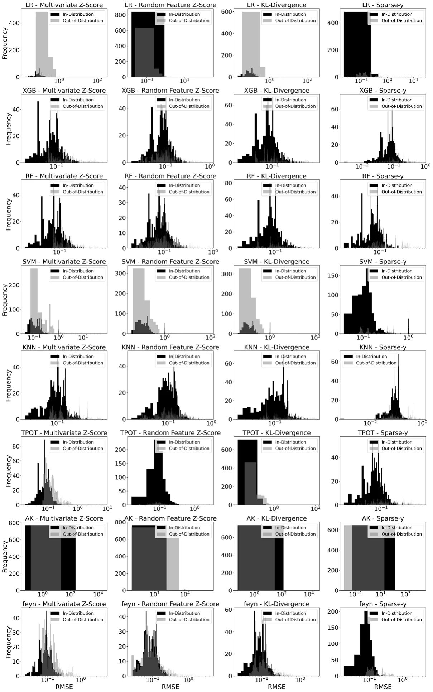
ORCID iDs
Assaf Shmuel https://orcid.org/0000-0002-1794-9381 Oren Glickman https://orcid.org/0009-0000-5158-7372 Teddy Lazebnik https://orcid.org/0000-0002-7851-8147
Article notes
- Publication history
- Received 10 June 2024 · Accepted 19 December 2024 · Published 6 January 2025
- Keywords
- data-driven model generalization
- out of distribution
- feature engineering
- symbolic regression
- machine learning robustness
References
- Kutz J N 2017 Deep learning in fluid dynamics J. Fluid Mech. 814 1–4 doi:10.1017/jfm.2016.803
- Reichstein M et al 2019 Deep learning and process understanding for data-driven earth system science Nature 566 195–204 doi:10.1038/s41586-019-0912-1
- Alzubaidi L, Zhang J, Humaidi A J, Al-Dujaili A, Duan Y, Al-Shamma O, Santamaría J, Fadhel M A, Al-Amidie M and Farhan L 2021 Review of deep learning: concepts, cnn architectures, challenges, applications, future directions J. Big Data 8 1–74 doi:10.1186/s40537-021-00444-8
- Raissi M and Karniadakis G E 2018 Hidden physics models: machine learning of nonlinear partial differential equations J. Comput. Phys. 357 125–41 doi:10.1016/j.jcp.2017.11.039
- Virgolin M, Wang Z, Alderliesten T and Bosman P A N 2020 Machine learning for the prediction of pseudorealistic pediatric abdominal phantoms for radiation dose reconstruction J. Med. Imaging 7 046501 doi:10.1117/1.JMI.7.4.046501
- Zhong J, Hu X, Zhang J and Gu M 2005 Comparison of performance between different selection strategies on simple genetic algorithms Int. Conf. on Computational Intelligence for Modelling, Control and Automation and Int. Conf. on Intelligent Agents, web Technologies and Internet Commerce (CIMCA-IAWTIC’06) vol 2 (IEEE) pp 1115–21
- Lazebnik T and Rosenfeld A 2023 Fspl: A meta-learning approach for a filter and embedded feature selection pipeline Int. J. Appl. Math. Comput. Sci. 33 103–115 doi:10.34768/amcs-2023-0009
- Shami L and Lazebnik T 2022 Economic aspects of the detection of new strains in a multi-strain epidemiological-mathematical model Chaos Solitons Fractals 165 112823 doi:10.1016/j.chaos.2022.112823
- He X, Zhao K and Chu X 2021 Automl: A survey of the state-of-the-art Knowl.-Based Syst. 212 106622 doi:10.1016/j.knosys.2020.106622
- Huber M F 2021 A survey on the explainability of supervised machine learning J. Artif. Intell. Res. 70 28 doi:10.1613/jair.1.12228
- Marcinkevics R and Vogt J E 2023 Interpretability and explainability: a machine learning zoo mini-tour (arXiv:2012.01805) link
- Li T, Zhong J, Liu J, Wu W and Zhang C 2018 Ease. ml: towards multi-tenant resource sharing for machine learning workloads Proc. VLDB Endowment vol 11 pp 607–20
- Heaton J 2016 An empirical analysis of feature engineering for predictive modeling SoutheastCon 2016 pp 1–6
- Khurana U, Turaga D, Samulowitz H and Parthasrathy S 2016 Cognito: automated feature engineering for supervised learning 2016 IEEE 16th Int. Conf. on Data Mining Workshops (ICDMW) pp 1304–7
- Lu X, Ming L, Liu W and Li H-X 2018 Probabilistic regularized extreme learning machine for robust modeling of noise data IEEE Trans. Cybern. 48 2368–77 doi:10.1109/TCYB.2017.2738060
- Dalessandro B 2013 Bring the noise: embracing randomness is the key to scaling up machine learning algorithms Big Data 1 110–2 doi:10.1089/big.2013.0010
- Gama J, Zliobaite I, Bifet A, Pechenizkiy M and Bouchachia A 2014 A survey on concept drift adaptation ACM Comput. Surv. 46 1–37 doi:10.1145/2523813
- Yao H, Wang Y, Li S, Zhang L, Liang W, Zou J and Finn C 2022 Improving out-of-distribution robustness via selective augmentation Proc. 39th Int. Conf. on Machine Learning (Proc. of Machine Learning Research) vol 162 pp 25407–37
- Krueger D, Caballero E, Jacobsen J-H, Zhang A, Binas J, Zhang D, Priol R L and Courville A 2021 Out-of-distribution generalization via risk extrapolation (rex) Proc. 38th Int. Conf. on Machine Learning vol 139 (PMLR) pp 5815–26
- Fort S, Ren J and Lakshminarayanan B 2021 Exploring the limits of out-of-distribution detection Advances in Neural Information Processing Systems vol 34, ed M Ranzato, A Beygelzimer, Y Dauphin, P S Liang and J W Vaughan pp 7068–81
- Hendrycks D et al 2021 The many faces of robustness: a critical analysis of out-of-distribution generalization Proc. IEEE/CVF Int. Conf. on Computer Vision (ICCV) pp 8340–9
- Miller J P, Taori R, Raghunathan A, Sagawa S, Koh P W, Shankar V, Liang P, Carmon Y and Schmidt L 2021 Accuracy on the line: on the strong correlation between out-of-distribution and in-distribution generalization Proc. 38th Int. Conf. on Machine Learning vol 139 pp 7721–35
- Hsu Y-C, Shen Y, Jin H and Kira Z 2020 Generalized odin: detecting out-of-distribution image without learning from out-of-distribution data Proc. IEEE/CVF Conf. on Computer Vision and Pattern Recognition (CVPR)
- Bengio Y et al 2011 Deep learners benefit more from out-of-distribution examples Proc. 14th Int. Conf. on Artificial Intelligence and Statistics vol 15 (PMLR) pp 164–72
- Jordan M I and Mitchell T M 2015 Machine learning: trends, perspectives and prospects Science 349 255–60 doi:10.1126/science.aaa8415
- Chen Q and Xue B 2022 Generalisation in Genetic Programming for Symbolic Regression: Challenges and Future Directions (Springer) pp 281–302
- Zegklitz J and Posik P 2021 Benchmarking state-of-the-art symbolic regression algorithms Genet. Program. Evol. Mach. 22 5–33 doi:10.1007/s10710-020-09387-0
- Keren L S, Liberzon A and Lazebnik T 2023 A computational framework for physics-informed symbolic regression with straightforward integration of domain knowledge Sci. Rep. 13 1249 doi:10.1038/s41598-023-28328-2
- Biggio L, Bendinelli T, Neitz A, Lucchi A and Parascandolo G 2021 Neural symbolic regression that scales Proc. 38th Int. Conf. on Machine Learning vol 139 pp 936–45
- Wilstrup C and Kasak J 2021 Symbolic regression outperforms other models for small data sets (arXiv:2103.15147) link
- Udrescu S-M and Tegmark M 2020 AI Feynman: a physics-inspired method for symbolic regression Sci. Adv. 6 eaay2631 doi:10.1126/sciadv.aay2631
- Stijven S, Vladislavleva E, Kordon A, Willem L and Kotanchek M E 2016 Prime-time: symbolic regression takes its place in the real world Genetic Programming Theory and Practice Xiii (Genetic and Evolutionary Computation)
- Mahouti P, Gunes F, Belen M A and Demirel S 2021 Symbolic regression for derivation of an accurate analytical formulation using “big data”: an application example Appl. Comput. Electromagn. Soc. J. 32 372–80 doi:10.1016/j.jhydrol.2014.09.060
- Brolos K R, Machado M V, Cave C, Kasak J, Stentoft-Hansen V, Batanero V G, Jelen T and Wilstrup C 2021 An approach to symbolic regression using feyn (arXiv:2104.05417) link
- Sathia V, Ganesh V and Nanditale S R T 2021 Accelerating genetic programming using GPUs (arXiv:2110.11226) link
- Olson R S and Moore J H 2016 Tpot: A tree-based pipeline optimization tool for automating machine learning JMLR: Workshop and Conf. Proc. vol 64 pp 66–74
- Jin H, Song Q and Hu X 2019 Auto-keras: An efficient neural architecture search system Proc. 25th ACM SIGKDD Int. Conf. on Knowledge Discovery & Data Mining (Association for Computing Machinery) pp 1946–56
- Arjovsky M 2020 Out of distribution generalization in machine learning PhD Thesis New York University
- Caro M C, Huang H-Y, Ezzell N, Gibbs J, Sornborger A T, Cincio L, Coles P J and Holmes Z 2023 Out-of-distribution generalization for learning quantum dynamics Nat. Commun. 14 3751 doi:10.1038/s41467-023-39381-w
- Veturi Y A et al 2022 Syntheye: investigating the impact of synthetic data on ai-assisted gene diagnosis of inherited retinal disease Ophthalmol. Sci. 3 100258 doi:10.1016/j.xops.2022.100258
- Birky D, Garbrecht K, Emery J, Alleman C, Bomarito G and Hochhalter J 2023 Generalizing the gurson model using symbolic regression and transfer learning to relax inherent assumptions Modelling Simul. Mater. Sci. Eng. 31 085005 doi:10.1088/1361-651X/acfe28
- Dundar B, Krishnapuram M, Bi J and Rao R B 2007 Learning classifiers when the training data is not IID IJCAI 2007 756–61
- Krongauz D and Lazebnik T 2022 Collective evolution learning model for vision-based collective motion with collision avoidance PLoS One 18 e0270318
- Afsar M M, Crump T and Far B 2022 Reinforcement learning based recommender systems: a survey ACM Comput. Surv. 55 1–38
- Vilalta R, Giraud-Carrier C and Brazdil P 2010 Meta-Learning - Concepts and Techniques (Springer) pp 717–31
- Ghassemi N and Fazl-Ersi E 2022 A comprehensive review of trends, applications and challenges in out-of-distribution detection (arXiv:2209.12935) link
- Yang J, Zhou K, Li Y and Liu Z 2022 Generalized out-of-distribution detection: a survey Int. J. Comput. Vis. 132 5635–62
- Kirchheim K, Filax M and Ortmeier F 2022 Pytorch-ood: a library for out-of-distribution detection based on pytorch Proc. IEEE/CVF Conf. on Computer Vision and Pattern Recognition (CVPR) Workshops pp 4351–60
- Omee S S, Fu N, Dong R, Hu M and Hu J 2024 Structure-based out-of-distribution (ood) materials property prediction: a benchmark study npj Comput. Mater. 10 144 doi:10.1038/s41524-024-01316-4
- Li K, Rubungo A N, Lei X, Persaud D, Choudhary K, DeCost B, Dieng A B and Hattrick-Simpers J 2024 Probing out-of-distribution generalization in machine learning for materials (arXiv:2406.06489) link
- Liu J, Shen Z, He Y, Zhang X, Xu H, Yu R and Cui P 2023 Towards out-of-distribution generalization: a survey (arXiv:2108.13624) link
- Krueger D, Caballero E, Jacobsen J-H, Zhang A, Binas J, Zhang D, Priol R L and Courville A 2021 Out-of-distribution generalization via risk extrapolation (rex) Proc. 38th Int. Conf. on Machine Learning ed M Meila and T Zhang (PMLR) pp 5815–26
- Yao H, Wang Y, Li S, Zhang L, Liang W, Zou J and Finn C 2022 Improving out-of-distribution robustness via selective augmentation Proc. 39th Int. Conf. on Machine Learning vol 162, ed K Chaudhuri, S Jegelka, L Song, C Szepesvari, G Niu and S Sabato (PMLR) pp 25407–37
- Bai H, Canal G, Du X, Kwon J, Nowak R D and Li Y 2023 Feed two birds with one scone: exploiting wild data for both out-of-distribution generalization and detection Proc. 40th Int. Conf. on Machine Learning vol 202, ed A Krause, E Brunskill, K Cho, B Engelhardt, S Sabato and J Scarlett (PMLR) pp 1454–71
- Miller J P, Taori R, Raghunathan A, Sagawa S, Koh P W, Shankar V, Liang P, Carmon Y and Schmidt L 2021 Accuracy on the line: on the strong correlation between out-of-distribution and in-distribution generalization Proc. 38th Int. Conf. on Machine Learning (Proc. of Machine Learning Research) vol 139, ed M Meila and T Zhang (PMLR) pp 7721–35
- La Cava W, Orzechowski P, Burlacu B, de França F O, Virgolin M, Jin Y, Kommenda M and Moore J H 2021 Contemporary symbolic regression methods and their relative performance (arXiv:2107.14351) link
- Wang Y, Wagner N and James M R 2019 Symbolic regression in materials science MRS Commun. 9 793–805 doi:10.1557/mrc.2019.85
- Heule M J H and Kullmann O 2017 The science of brute force Commun. ACM 60 70–79 doi:10.1145/3107239
- Riolo R 2013 Genetic Programming Theory and Practice X (Springer)
- Miller B L et al 1995 Genetic algorithms, tournament selection and the effects of noise Complex Syst. 9 193–212
- Orzechowski P, La Cava W and Moore J H 2018 Where are we now? A large benchmark study of recent symbolic regression methods GECCO18: Proc. Genetic and Evolutionary Computation Conf.
- Petersen B K, Larma M L, Mundhenk T N, Santiago C P, Kim S K and Kim J T 2019 Deep symbolic regression: recovering mathematical expressions from data via risk-seeking policy gradients (arXiv:1912.04871) link
- Quade M, Abel M, Nathanutz J and Brunton S L 2018 Sparse identification of nonlinear dynamics for rapid model recovery Chaos 28 063116 doi:10.1063/1.5027470
- Brunton S L, Proctor J L and Kutz J N 2016 Discovering governing equations from data by sparse identification of nonlinear dynamical systems Proc. Natl Acad. Sci. 113 3932–7 doi:10.1073/pnas.1517384113
- Kaiser E, Kutz J N and Brunton S L 2018 Sparse identification of nonlinear dynamics for model predictive control in the low-data limit Proc. R. Soc. A 474 20180335 doi:10.1098/rspa.2018.0335
- Mangan N M, Kutz J N, Brunton S L and Proctor j L 2017 Model selection for dynamical systems via sparse regression and information criteria Proc. R. Soc. A 473 20170009 doi:10.1098/rspa.2017.0009
- Kaptanoglu A A, de Silva B M, Fasel U, Kaheman K, Callaham J L, Delahunt C B, Champion K, Loiseau J-C, Kutz J N and Brunton S L 2021 Pysindy: a comprehensive python package for robust sparse system identification (arXiv:2111.08481) link
- Kronberger G, Olivetti de Franca F, Burlacu B, Haider C and Kommenda M 2022 Shape-constrained symbolic regression-improving extrapolation with prior knowledge Evol. Comput. 30 75–98 doi:10.1162/evco_a_00294
- Salustowicz R and Schmidhuber J 1997 Probabilistic incremental program evolution Evol. Comput. 5 123–41 doi:10.1162/evco.1997.5.2.123
- Sastry K and Goldberg D E 2003 Probabilistic model building and competent genetic programming Genetic Programming Theory and Practice (Springer) pp 205–20
- Yanai K and Iba H 2003 Estimation of distribution programming based on Bayesian network The 2003 Congress on Evolutionary Computation vol 3 (IEEE) pp 1618–25
- Hemberg E, Veeramachaneni K, McDermott J, Berzan C and O’Reilly U-M 2012 An investigation of local patterns for estimation of distribution genetic programming Proc. 14th Annual Conf. on Genetic and Evolutionary Computation pp 767–74
- Shan Y, McKay R I, Baxter R, Abbass H, Essam D and Nguyen H X 2004 Grammar model-based program evolution Proc. 2004 Congress on Evolutionary Computation vol 1 (IEEE) pp 478–85
- Bosman P A N and de Jong E D 2004 Learning probabilistic tree grammars for genetic programming Int. Conf. on Parallel Problem Solving From Nature (Springer) pp 192–201
- Wong P-K, Lo L-Y, Wong M-L and Leung K-S 2014 Grammar-based genetic programming with Bayesian network 2014 IEEE Congress on Evolutionary Computation (IEEE) pp 739–46
- Sotto L F D P and de Melo V V 2017 A probabilistic linear genetic programming with stochastic context-free grammar for solving symbolic regression problems Proc. Genetic and Evolutionary Computation Conf. pp 1017–24
- Stephens T 2016 Genetic Programming in Python, with a scikit-learn inspired API: gplearn (available at: https://gplearn.readthedocs. io/en/stable/intro. html) link
- Conrad F, Malzer M, Schwarzenberger M, Wiemer H and Ihlenfeldt S 2022 Benchmarking AutoML for regression tasks on small tabular data in materials design Sci. Rep. 12 19350 doi:10.1038/s41598-022-23327-1
- Huang J S, Liew J X and Liew K M 2021 Data-driven machine learning approach for exploring and assessing mechanical properties of carbon nanotube-reinforced cement composites Compos. Struct. 267 113917 doi:10.1016/j.compstruct.2021.113917
- Su M, Zhong Q, Peng H and Li S 2021 Selected machine learning approaches for predicting the interfacial bond strength between FRPs and concrete Constr. Build. Mater. 270 121456 doi:10.1016/j.conbuildmat.2020.121456
- Atici U 2011 Prediction of the strength of mineral admixture concrete using multivariable regression analysis and an artificial neural network Expert Syst. Appl. 38 9609–18 doi:10.1016/j.eswa.2011.01.156
- Guo S, Yu J, Liu X, Wang C and Jiang Q 2019 A predicting model for properties of steel using the industrial big data based on machine learning Comput. Mater. Sci. 160 95–104 doi:10.1016/j.commatsci.2018.12.056
- Koya B P, Aneja S, Gupta R and Valeo C 2022 Comparative analysis of different machine learning algorithms to predict mechanical properties of concrete Mech. Adv. Mater. Struct. 29 4032–43 doi:10.1080/15376494.2021.1917021
- Dunn A, Wang Q, Ganose A, Dopp D and Jain A 2020 Benchmarking materials property prediction methods: the Matbench test set and Automatminer reference algorithm Comput. Mater. 6 138 doi:10.1038/s41524-020-00406-3
- Bachir R, Mohammed A M S and Habib T 2018 Using artificial neural networks approach to estimate compressive strength for rubberized concrete Period. Polytech. Civil Eng. 62 858–65
- Mahalanobis P C 2018 On the generalized distance in statistics Sankhya 80 S1–S7
- Bendale A and Boult T 2015 Towards open world recognition Proc. IEEE Conference on Computer Vision and Pattern Recognition pp 1893–902
- Lee K, Lee K, Lee H and Shin J 2018 A simple unified framework for detecting out-of-distribution samples and adversarial attacks Advances in Neural Information Processing Systems p 31
- Ren J, Fort S, Liu J, Roy A G, Padhy S and Lakshminarayanan B 2021 A simple fix to mahalanobis distance for improving near-ood detection (arXiv:2106.09022) link
- Sehwag V, Chiang M and Mittal P 2021 Ssd: A unified framework for self-supervised outlier detection (arXiv:2103.12051) doi:10.48550/arXiv.2103.12051
- Taylor P N, Moreira da Silva N, Blamire A, Wang Y and Forsyth R 2020 Early deviation from normal structural connectivity: a novel intrinsic severity score for mild TBI Neurology 94 e1021–6 doi:10.1212/WNL.0000000000008902
- Mahony C R and Cannon A J 2018 Wetter summers can intensify departures from natural variability in a warming climate Nat. Commun. 9 783 doi:10.1038/s41467-018-03132-z
- Çetin U and Tasgin M 2020 Anomaly detection with multivariate k-sigma score using monte carlo 2020 5th Int. Conf. on Computer Science and Engineering (UBMK) (IEEE) pp 94–98
- Kim G 2000 Multivariate outliers and decompositions of Mahalanobis distance Commun. Stat. - Theory Methods 29 1511–26 doi:10.1080/03610920008832559
- Mayrhofer M and Filzmoser P 2023 Multivariate outlier explanations using shapley values and Mahalanobis distances Econ. Stat. 6–13 doi:10.1016/j.ecosta.2023.04.003
- Sastry C M and Oore S 2020 Detecting out-of-distribution examples with gram matrices Proc. 37th Int. Conf. on Machine Learning (Proc. of Machine Learning Research) vol 119 (PMLR) pp 8491–501
- Zhang Y, Pan J, Liu W, Chen Z, Li K, Wang J, Liu Z and Wei H 2023 Kullback-Leibler divergence-based out-of-distribution detection with flow-based generative models IEEE Trans. Knowl. Data Eng. 36 1–14 doi:10.1109/TKDE.2023.3309853
- Holland J H 1992 Genetic algorithms Sci. Am. 267 66–73 doi:10.1038/scientificamerican0792-66
- Erickson N, Mueller J, Shirkov A, Zhang H, Larroy P, Li M and Smola A 2020 Autogluon-tabular: robust and accurate automl for structured data (arXiv:2003.06505) link
- Hollmann N, Müller S, Eggensperger K, and Hutter F 2022 TabPFN: a transformer that solves small tabular classification problems in a second (arXiv:2207.01848) link
- Hoo S B, Müller S, Salinas D and Hutter F 2024 The tabular foundation model TabPFN outperforms specialized time series forecasting models based on simple features NeurIPS 2024 Third table Representation Learning Workshop
- Chen T and Guestrin C 2016 XGBoost: a scalable tree boosting system Proc. 22nd ACM SIGKDD Int. Conf. on Knowledge Discovery and Data Mining pp 785–94
- Rokach L 2016 Decision forest: twenty years of research Inf. Fusion 27 111–25 doi:10.1016/j.inffus.2015.06.005
- Swain P H and Hauska H 1977 The decision tree classifier: design and potential IEEE Trans. Geosci. Electron. 15 142–7 doi:10.1109/TGE.1977.6498972
- Pedregosa F et al 2011 Scikit-learn: machine learning in python J. Mach. Learn. Res. 12 2825–30
- Zang B, Huang R, Wang L, Chen J, Tian F and Wei X 2016 An improved KNN algorithm based on minority class distribution for imbalanced dataset 2016 Int. Computer Symp. (ICS) pp 696–700
- Shami L and Lazebnik T 2023 Implementing machine learning methods in estimating the size of the non-observed economy Comput. Econ. 63 1459–76 doi:10.1007/s10614-023-10369-4
- Shmuel A, Glickman O and Lazebnik T 2024 Symbolic regression as a feature engineering method for machine and deep learning regression tasks Mach. Learn.: Sci. Technol. 5 025065 doi:10.1088/2632-2153/ad513a
This page reproduces the article Shmuel et al. (2025), Machine Learning: Science and Technology, doi:10.1088/2632-2153/ada221, with the permission of the publisher. Text, tables and figures were extracted from the PDF and the layout adapted for the web; the PDF is the version of record.